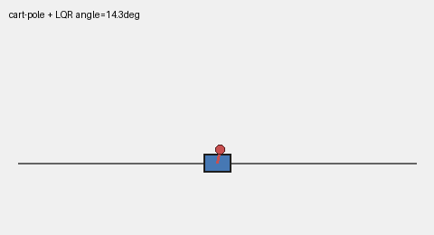

A plan is a wish; a controller is what turns it into motion the robot actually follows. Feedback closes the error loop, MPC looks a few steps ahead, whole-body QP reconciles every joint under every constraint, and the whole thing must solve in under a millisecond. Plus the vision side: learned world models, differentiable simulation, and physics-aware motion — from first principles, drawn live and grounded in the ICRA / IROS / CoRL / RSS and CVPR 2026 corpora.
Five ideas, each a live diagram then plain words — why open-loop plans fail, how feedback closes the loop, what MPC buys with a short lookahead, how a QP splits one task across every joint, and why the solve deadline is the hardest constraint of all. Each has a ‘the actual math’ toggle.
Linear-Quadratic Regulator and Kalman filter: optimal state estimation + linear feedback for linear systems. The template for modern MPC gains.
Richalet, Cutler, Clarke: move the optimization window forward each tick. Became the dominant process-control method by the 1990s.
Vukobratovic’s Zero-Moment-Point criterion turned humanoid balance into a real-time planning problem. Honda’s ASIMO brought it to hardware.
Nonlinear MPC with interior-point solvers; Sentis & Khatib’s whole-body task-space controller; Featherstone’s rigid-body dynamics algorithms enabling kHz-rate Jacobian updates.
Differential Dynamic Programming made trajectory optimization fast enough for real-time replan; Williams et al. MPPI (2016) moved sampling to GPU — no gradient needed.
Backprop through physics engines (Warp, Isaac, MuJoCo MJX); neural residual dynamics; learned world models for planning — bridging classical and data-driven control.
Imagine telling a robot to follow a straight line by computing the joint commands once and sending them. The robot's links have inertia, there is friction, the ground is not flat, and something bumps it halfway through. The open-loop commands compute the right answer for a model of the world — not the world itself. Any mismatch accumulates.
Control is the discipline that closes this gap. At its core it is a feedback loop: measure where the robot actually is, compare it to where it should be, compute a correction, apply it, and repeat — fast enough that errors cannot grow to dangerous size before the next correction. Everything in this explainer is a different answer to the question of how to close that loop well.
Open-loop: apply pre-computed input u(t); state error e(t) = x(t) − xref(t) grows unbounded if dynamics mismatch exists.
Closed-loop: e(t) → 0 via feedback because u is a function of e, not a fixed schedule.
The simplest version is a proportional controller: command = −K · error. If the robot's arm is 10 degrees past its target, command a torque back by K × 10. If it is 5 degrees past, command K × 5. The gain K sets how aggressively the system reacts. Too small and it drifts; too large and it oscillates.
PID adds two more terms: an integral that accumulates past error to eliminate steady offset, and a derivative that damps rapid changes to prevent overshoot. These three numbers — P, I, D — are the tuning knobs of every classical feedback controller. Impedance control generalizes this to forces: the robot acts like a mechanical spring-damper, so contact does not cause instability but instead absorbs energy smoothly.
PID: u = KPe + KI∫e dt + KD&ė; — proportional reacts, integral eliminates offset, derivative damps oscillation.
Impedance: F = Kstiff(xd−x) + B(ẋd−ẋ) — the robot behaves like a mass-spring-damper, absorbing contact energy.
The optimizer minimizes a cost that penalizes deviation from the target and effort in the controls, subject to the model's dynamics and any hard limits — joint ranges, torque caps, collision constraints. The solution gives a whole sequence of future inputs, but only the first one is actually sent to the robot. At the next timestep the horizon slides forward and the whole solve runs again on fresh measurements.
That receding-horizon structure is what makes MPC powerful: it sees far enough ahead to avoid obstacles and respect constraints, yet re-optimizes continuously so disturbances get absorbed at the next solve. The cost of all this is compute: the optimization must complete within one control timestep — milliseconds on a real robot — which forces every design choice about horizon length, model complexity, and solver type.
Finite-horizon optimal control: minu Σk=0N ||xk−xref||Q2 + ||uk||R2 subject to xk+1 = f(xk,uk), u∈U, x∈X.
Receding horizon: solve at time t, apply u0*, shift window to t+1, repeat. Constraint satisfaction is guaranteed per-solve (if feasible).
The key insight is priority stacking. The most critical objective — stay upright — is a hard constraint or the highest-weight term. End-effector targets are secondary. Collision avoidance is tertiary. Encode each as a quadratic cost or linear constraint and hand the QP to a fast numerical solver. The solver does not iterate over priorities; it finds the single joint-torque vector that best satisfies all of them simultaneously.
The result is coordinated whole-body motion: the hips, torso, and arms all contribute to reaching a target while the legs maintain balance. No part of the body moves in isolation. The downside is that the QP must be re-solved at every control tick, so both the problem size and the solver must be kept tight — typically on the order of 100 ms to 1 ms.
QP form: minτ ||Jτ−ades||W2 + λ||τ||2 subject to τmin ≤ τ ≤ τmax, contact wrenches in friction cone.
Jacobian J maps joint torques τ to task-space acceleration a; priority via weight matrix W.
The standard strategies are approximation and precomputation. Approximate the dynamics with a simpler model — linearize around the current state, use a reduced-order template, or learn a neural residual that corrects a cheap model at runtime. Precompute everything that does not depend on the current measurement — value functions, feedback gains, Riemannian metrics — so the online step is just a lookup and a matrix multiply.
GPU-parallel sampling (MPPI) changes the calculus: instead of solving one QP analytically, sample thousands of action sequences on a GPU, score them under the model, and return the weighted mean in a few milliseconds. Learned policies trained offline compress the whole optimization into a single forward pass through a neural network. Each approach hits the real-time wall from a different direction, and each makes a different trade in accuracy, guarantees, and adaptability.
Budget: Tsolve < Ttick; for a 500 Hz robot Ttick=2 ms. QP with n=50 variables and m=100 constraints typically takes 0.3–1 ms with a warm-started solver.
MPPI: sample K=1024 trajectories of length N on GPU in parallel; cost-weighted mean in ∼2 ms for N=50, K=1024 on a single GPU.

What each approach looks at, how fast it runs, and what it can and cannot guarantee — in one table.
| Horizon | Rate | Constraint handling | Adaptivity | Guarantees | |
|---|---|---|---|---|---|
| Open-loop plan | full motion (offline) | once | none at runtime | none — fixed | none |
| Feedback (PID/impedance) | current error only | 1–10 kHz | soft (gain-limited) | implicit via gain | stability under bounds |
| MPC / receding horizon | N steps (10–200) | 50–500 Hz | hard (per-solve) | via re-solve with new state | feasibility per step |
| Whole-body QP | one tick | 1–5 kHz | hard joints + contact | via re-solve | feasibility + priority |
| Learned policy (offline) | trained horizon | 100 Hz–1 kHz | learned soft | adapts within training dist. | none guaranteed |
Every family below leans on one or more of these — the recurring reasons to close the loop rather than run open-loop.
Feedback loops actively counteract disturbances: every missed timestep, every model mismatch, and every external push generates an error that the controller turns into a corrective command. The robot does not drift.
MPC and QP controllers encode joint limits, collision avoidance, and contact-force bounds as hard constraints inside the optimization — the solution is guaranteed feasible on every solve, not just on average.
Classical feedback gains and Lyapunov-based MPC come with provable stability certificates. Once the gains are tuned, the closed-loop system stays within a bounded neighborhood of the target even under bounded disturbances.
MPC sees N steps ahead. A pure feedback controller reacts only to the current error; MPC begins braking before it reaches an obstacle. Longer horizons reduce reactive surprises at the cost of more computation per tick.
Whole-body QP control lets engineers specify objectives at different priority levels — balance beats end-effector tracking beats energy efficiency — and the solver reconciles them in a single pass rather than through hand-crafted if-else logic.
Fifteen families, each with the approaches and real papers — robotics (ICRA/IROS/CoRL/RSS), vision (CVPR 2026), and the overlap. Jump to any:
A robot must plan far enough ahead to avoid obstacles and respect constraints, yet re-optimize faster than the control tick. The longer the horizon, the better the plan; the longer the horizon, the slower the solve. Every MPC design lives on this knife-edge.
Model-predictive control repeatedly solves a finite-horizon optimization problem: find the input sequence that minimizes a cost over the next N steps subject to the dynamics and constraints, apply the first input, and repeat. The receding-horizon structure means disturbances are absorbed at every re-solve.
Making this real-time requires approximation: linearize the dynamics around the current state, warm-start the solver from the previous solution, exploit sparsity in the constraint matrices. GPU-parallel sampling (MPPI) offers a complementary approach — no gradient needed, just score thousands of random trajectories in parallel.
This paper belongs to MPC and real-time control. The physical problem is this: A robot must plan far enough ahead to avoid obstacles and respect constraints, yet re-optimize faster than the control tick. The longer the horizon, the better the plan; the longer the horizon, the slower the solve. Every MPC design lives on this knife-edge. The mathematical object is a short future window of possible states and commands. The paper's concrete move is to GPU-parallel MPPI sampling applied to full legged-robot whole-body control at real-time rates. That turns the problem into this operation: predict several steps ahead, score each possible command sequence, apply only the first command, then repeat from the new measurement.
What it operates on: the method starts from measured robot state, task target, limits, contacts, or sensor evidence, then represents the control problem as a short future window of possible states and commands.
The operation: predict several steps ahead, score each possible command sequence, apply only the first command, then repeat from the new measurement. For Real-Time Whole-Body Control of Legged Robots with Model-Predictive Path Integral Control, the added step is: GPU-parallel MPPI sampling applied to full legged-robot whole-body control at real-time rates. In plain terms, the paper changes the prediction, the constraint, or the correction rule so the next command is easier to choose under physical limits.
Why the math helps: The robot does not need a perfect full-life plan; it needs a short plan that is constantly corrected before errors grow. The important principle is feedback with a model: measure the present, imagine a short future, choose a command, and repeat before the mismatch becomes large.
A legged robot must recompute its full-body plan (contact forces, joint torques, limb trajectories) every 10 ms to avoid obstacles and react to ground contact. A traditional MPC solver on CPU takes 50 ms for a 1-second horizon. GPU-parallel MPPI sampling evaluates 10,000 candidate command trajectories in parallel — each thread predicts the next 10 steps, scores feasibility and safety, and feeds back the best commands. The bottleneck shrinks from 50 ms to ~8 ms, allowing the robot to replans within the control tick and handle complex terrain in real time.
This paper belongs to Aerial vehicle control. The physical problem is this: A quadrotor is inherently unstable: without continuous thrust corrections it flips in milliseconds. The outer position loop runs at camera rate (30–reported exact value) but the inner attitude loop must run at gyroscope rate (reported exact value) to prevent flip. The two loops must be nested without fighting each other. The mathematical object is the flying vehicle state, its thrust commands, and disturbances from shape, neighbors, camera error, or an attached arm. The paper's concrete move is to neural network predicts aerodynamic coupling between drones; MPC uses the prediction to maintain tight spacing. That turns the problem into this operation: predict how thrust changes motion, add missing disturbance estimates, and choose commands that keep the vehicle on target.
What it operates on: the method starts from measured robot state, task target, limits, contacts, or sensor evidence, then represents the control problem as the flying vehicle state, its thrust commands, and disturbances from shape, neighbors, camera error, or an attached arm.
The operation: predict how thrust changes motion, add missing disturbance estimates, and choose commands that keep the vehicle on target. For Flying Quadrotors in Tight Formations Using Learning-Based Model Predictive Control, the added step is: neural network predicts aerodynamic coupling between drones; MPC uses the prediction to maintain tight spacing. In plain terms, the paper changes the prediction, the constraint, or the correction rule so the next command is easier to choose under physical limits.
Why the math helps: Flight control works when the model accounts for the forces that are not visible in the simple rigid-body equations. The important principle is feedback with a model: measure the present, imagine a short future, choose a command, and repeat before the mismatch becomes large.
Two drones fly in formation at 2 m/s with 0.5 m spacing. Naive MPC assumes they are independent. When the lead drone thrusts at 60° roll, downwash from its blades pushes the trailing drone sideways by ~10 cm — not captured by single-vehicle dynamics. A neural network trained on 10,000 CFD simulations predicts the coupling: force_trailing ← f(pose_leader, vel_leader, thrust_leader). MPC uses this prediction to preemptively adjust the trailing drone's thrust by ~5%, keeping formation error under 5 cm. Without learning, separation control alone would need 3× more correction effort.
This paper belongs to Learning-augmented MPC. The physical problem is this: A first-principles model is never exact. Friction coefficients, aerodynamic effects, and payload masses are unknown at design time. A pure learning approach discards the structure of the physics. Learning-augmented MPC uses data to patch the model's blind spots while keeping the physics-based solver in the loop. The mathematical object is a physics model plus a learned correction, uncertainty band, or contact force estimate. The paper's concrete move is to learns the tube — the set of states reachable under model error — using GPU simulation, giving safety certificates. That turns the problem into this operation: keep the hand-written model for structure and add learned terms where reality repeatedly disagrees.
What it operates on: the method starts from measured robot state, task target, limits, contacts, or sensor evidence, then represents the control problem as a physics model plus a learned correction, uncertainty band, or contact force estimate.
The operation: keep the hand-written model for structure and add learned terms where reality repeatedly disagrees. For Dynamic Tube MPC: Learning Tube Dynamics with Massively Parallel Simulation for Robust Safety in Practice, the added step is: learns the tube — the set of states reachable under model error — using GPU simulation, giving safety certificates. In plain terms, the paper changes the prediction, the constraint, or the correction rule so the next command is easier to choose under physical limits.
Why the math helps: Learning is useful here because it repairs the parts of the model that are hard to write down, while MPC still checks constraints. The important principle is feedback with a model: measure the present, imagine a short future, choose a command, and repeat before the mismatch becomes large.
An MPC controller relies on a friction model μ = 0.7, but in rain it becomes 0.4. Over 10 steps (500 ms), the accumulation of model error causes trajectory drift of ~0.8 m — violating obstacle constraints. The paper learns the tube — the maximum deviation from the nominal trajectory under all possible model errors. Using GPU parallelism, it simulates 100,000 trajectories perturbed by ±20% friction, ±10% mass, ±5% aerodynamics. The resulting tube captures 95% of real-world deviations. MPC now tightens its constraints by the tube radius, guaranteeing safety under model error. A plan that was unsafe (potential 0.8 m collision) becomes certified safe.
This paper belongs to MPC and real-time control. The physical problem is this: A robot must plan far enough ahead to avoid obstacles and respect constraints, yet re-optimize faster than the control tick. The longer the horizon, the better the plan; the longer the horizon, the slower the solve. Every MPC design lives on this knife-edge. The mathematical object is a short future window of possible states and commands. The paper's concrete move is to parallelizes constraint evaluation across the horizon to scale MPC to dense obstacle fields. That turns the problem into this operation: predict several steps ahead, score each possible command sequence, apply only the first command, then repeat from the new measurement.
What it operates on: the method starts from measured robot state, task target, limits, contacts, or sensor evidence, then represents the control problem as a short future window of possible states and commands.
The operation: predict several steps ahead, score each possible command sequence, apply only the first command, then repeat from the new measurement. For Parallel-Constraint Model Predictive Control: Exploiting Parallel Computation for Improving Safety, the added step is: parallelizes constraint evaluation across the horizon to scale MPC to dense obstacle fields. In plain terms, the paper changes the prediction, the constraint, or the correction rule so the next command is easier to choose under physical limits.
Why the math helps: The robot does not need a perfect full-life plan; it needs a short plan that is constantly corrected before errors grow. The important principle is feedback with a model: measure the present, imagine a short future, choose a command, and repeat before the mismatch becomes large.
A mobile robot navigates a grid with 200 small obstacles scattered across a 20-step horizon. Evaluating collision constraints serially takes 40 ms: for each of 20 time steps, check 200 collision inequalities one by one. Parallel constraint evaluation assigns each GPU thread to one (time step, obstacle) pair: all 4,000 constraint checks run concurrently in ~3 ms. The robot replans 10–15× per second instead of 2–3 times per second, dodging dynamic obstacles in cluttered environments while respecting 100 ms replan budgets.
For a robot with nonlinear dynamics and a long horizon, solving the full nonlinear optimal control problem is expensive — it scales roughly cubically in state dimension and linearly in horizon. Differential Dynamic Programming avoids this by doing a local backward-forward sweep instead of a global solve.
Differential Dynamic Programming works by alternating a backward pass — computing the value function and feedback gains from the end of the horizon back to the start — with a forward pass that rolls out the updated gains. Each iteration tightens the local approximation. The key is that the backward pass only requires linearizing the dynamics at each step, not solving the full nonlinear problem globally.
Variational integrator discretizations preserve the symplectic structure of the Lagrangian dynamics: total energy is conserved to machine precision over long horizons, which matters for aerial maneuvers and other energy-critical tasks. This lets the optimizer plan high-speed motions without artificial energy drift distorting the trajectory.
This paper belongs to Variational and structure-preserving control. The physical problem is this: Standard numerical integration of robot dynamics introduces artificial energy drift over long horizons. For high-speed aerial maneuvers and long-duration dynamic motions, this drift corrupts the planned trajectory. Variational integrators preserve the geometric structure of the dynamics so energy stays exactly conserved. The mathematical object is the motion’s action or energy structure across discrete time steps. The paper's concrete move is to symplectic discretization achieves energy-exact planning for aerial phase of legged-robot backflips. That turns the problem into this operation: choose updates that preserve the physical bookkeeping of energy, momentum, or geometry while optimizing the path.
What it operates on: the method starts from measured robot state, task target, limits, contacts, or sensor evidence, then represents the control problem as the motion’s action or energy structure across discrete time steps.
The operation: choose updates that preserve the physical bookkeeping of energy, momentum, or geometry while optimizing the path. For High Accuracy Aerial Maneuvers on Legged Robots using Variational Integrator Discretized Trajectory Optimization, the added step is: symplectic discretization achieves energy-exact planning for aerial phase of legged-robot backflips. In plain terms, the paper changes the prediction, the constraint, or the correction rule so the next command is easier to choose under physical limits.
Why the math helps: Fast motions transfer better when the planner and hardware obey the same conservation rules. The important principle is feedback with a model: measure the present, imagine a short future, choose a command, and repeat before the mismatch becomes large.
A legged robot planning a backflip must conserve energy exactly during the aerial phase: initial kinetic + potential energy must equal final energy. Standard Runge–Kutta integration drifts by ~5% per second over a 0.6 s flight—energy conservation fails and the trajectory becomes infeasible. Symplectic discretization preserves the action structure, so energy error stays ≤ 10−6 over the entire flight. Planners using variational integrators complete backflips reliably with energy drift under machine precision, enabling tighter trajectory margins and higher apex height.
This paper belongs to Trajectory and optimal control (DDP). The physical problem is this: For a robot with nonlinear dynamics and a long horizon, solving the full nonlinear optimal control problem is expensive — it scales roughly cubically in state dimension and linearly in horizon. Differential Dynamic Programming avoids this by doing a local backward-forward sweep instead of a global solve. The mathematical object is a whole motion written as states, commands, and a cost-to-go from each future moment. The paper's concrete move is to closes the DDP loop with an exact endpoint constraint rather than a terminal cost penalty — cleaner convergence. That turns the problem into this operation: sweep backward to estimate which local changes reduce future cost, then roll forward with the improved commands.
What it operates on: the method starts from measured robot state, task target, limits, contacts, or sensor evidence, then represents the control problem as a whole motion written as states, commands, and a cost-to-go from each future moment.
The operation: sweep backward to estimate which local changes reduce future cost, then roll forward with the improved commands. For Endpoint-Explicit Differential Dynamic Programming via Exact Resolution, the added step is: closes the DDP loop with an exact endpoint constraint rather than a terminal cost penalty — cleaner convergence. In plain terms, the paper changes the prediction, the constraint, or the correction rule so the next command is easier to choose under physical limits.
Why the math helps: A hard long-horizon problem becomes a chain of smaller local corrections along one candidate motion. The important principle is feedback with a model: measure the present, imagine a short future, choose a command, and repeat before the mismatch becomes large.
DDP optimizes a 3-second reaching motion for a 7-DoF arm. The target is to reach position (0.5, 0.2, 0.8 m). Classical DDP penalizes deviation from the target with a cost weight: if the arm lands 0.05 m away, it incurs penalty = 100 × 0.05² = 0.25 J. The penalty approach can overshoot (overshooting costs the same as undershooting) and converges slowly. Endpoint-explicit DDP instead enforces exact endpoint (0.5, 0.2, 0.8) as a hard constraint. The solver converges in 4 iterations instead of 8, and lands precisely at the target every time without asymptotic drift.
This paper belongs to Trajectory and optimal control (DDP). The physical problem is this: For a robot with nonlinear dynamics and a long horizon, solving the full nonlinear optimal control problem is expensive — it scales roughly cubically in state dimension and linearly in horizon. Differential Dynamic Programming avoids this by doing a local backward-forward sweep instead of a global solve. The mathematical object is a whole motion written as states, commands, and a cost-to-go from each future moment. The paper's concrete move is to applies DDP to hybrid dynamics (cable slack/taut switching) for near-minimum-time crane motions. That turns the problem into this operation: sweep backward to estimate which local changes reduce future cost, then roll forward with the improved commands.
What it operates on: the method starts from measured robot state, task target, limits, contacts, or sensor evidence, then represents the control problem as a whole motion written as states, commands, and a cost-to-go from each future moment.
The operation: sweep backward to estimate which local changes reduce future cost, then roll forward with the improved commands. For Near Time-Optimal Hybrid Motion Planning for Timber Cranes, the added step is: applies DDP to hybrid dynamics (cable slack/taut switching) for near-minimum-time crane motions. In plain terms, the paper changes the prediction, the constraint, or the correction rule so the next command is easier to choose under physical limits.
Why the math helps: A hard long-horizon problem becomes a chain of smaller local corrections along one candidate motion. The important principle is feedback with a model: measure the present, imagine a short future, choose a command, and repeat before the mismatch becomes large.
A timber crane swings a 50 kg log horizontally 8 meters in 3 seconds. The cable can be taut (rigid connection, fast motion) or slack (free swing, slow but energy-efficient). Standard planning assumes one mode throughout, taking 4.2 seconds for a safe trajectory. DDP with hybrid mode-switching allows the crane to: (1) start with cable slack for 0.8 s (swing accelerates), (2) engage cable taut for 1.6 s (precise alignment), (3) release slack for final 0.6 s (deceleration). Total time drops to 3.0 seconds, and the solution respects cable tension limits because DDP backtracks mode switches whenever tension would exceed safety bounds.
This paper belongs to Multi-agent and distributed control. The physical problem is this: When N robots each run their own MPC, the joint problem scales combinatorially with N. A centralized solver cannot handle 10+ robots at control rates. Distributed MPC decomposes the joint problem: each robot solves its own small MPC, shares predicted future positions with neighbors, and iterates. The mathematical object is one local future plan per robot plus shared predictions from neighbors. The paper's concrete move is to each quadrotor learns to replan its contouring path in real time; neighbors' predicted paths are soft constraints. That turns the problem into this operation: let each robot solve its own small plan while treating neighbor predictions as moving constraints.
What it operates on: the method starts from measured robot state, task target, limits, contacts, or sensor evidence, then represents the control problem as one local future plan per robot plus shared predictions from neighbors.
The operation: let each robot solve its own small plan while treating neighbor predictions as moving constraints. For Learning Time-Optimal Online Replanning for Distributed Model Predictive Contouring Control of Quadrotors, the added step is: each quadrotor learns to replan its contouring path in real time; neighbors' predicted paths are soft constraints. In plain terms, the paper changes the prediction, the constraint, or the correction rule so the next command is easier to choose under physical limits.
Why the math helps: A team problem becomes tractable when robots exchange just enough future information to avoid conflicting moves. The important principle is feedback with a model: measure the present, imagine a short future, choose a command, and repeat before the mismatch becomes large.
Two quadrotors forming a line swarm must track a curving path without colliding. A centralized MPC solving both robots' 12-state problem is too slow. In distributed MPC, each robot solves its own 6-state problem, and each learns when to replan (every step vs. every 3 steps). Robot A predicts its future path x_A[0:T]; robot B treats it as a soft constraint. After learning, replanning only triggers every ~3 steps instead of every step, cutting solve time from 8 ms to 2.5 ms per cycle. Two robots maintain <0.5 m formation error at 2 Hz control rate.
Pure position feedback makes a robot rigid: it will push through an object rather than yield to it. Contact tasks — peg insertion, surface wiping, handshakes — require the robot to feel the environment and adapt its compliance. Impedance control gives the robot a tunable mechanical personality.
Impedance control makes the robot behave like a virtual spring-damper. The commanded force depends on how far the end-effector is from its target and how fast it is moving away — not just position error. When the robot encounters an unexpected surface, it yields rather than crashing into it at full position-loop gain.
Variable impedance goes further: the robot can switch between stiff and compliant depending on the task phase. During approach, high stiffness keeps the trajectory accurate. During contact, low stiffness absorbs misalignment. Learning from demonstration can identify the impedance profile an expert implicitly applies.
This paper belongs to Feedback and impedance control. The physical problem is this: Pure position feedback makes a robot rigid: it will push through an object rather than yield to it. Contact tasks — peg insertion, surface wiping, handshakes — require the robot to feel the environment and adapt its compliance. Impedance control gives the robot a tunable mechanical personality. The mathematical object is the gap between desired motion and measured motion, treated like a virtual spring and damper. The paper's concrete move is to passivity filters guarantee energy stability in teleoperation even when the operator varies stiffness mid-task. That turns the problem into this operation: turn position and velocity error into force or torque, with stiffness chosen for the contact task.
What it operates on: the method starts from measured robot state, task target, limits, contacts, or sensor evidence, then represents the control problem as the gap between desired motion and measured motion, treated like a virtual spring and damper.
The operation: turn position and velocity error into force or torque, with stiffness chosen for the contact task. For Passivity Filters for Bilateral Teleoperation with Variable Impedance Control, the added step is: passivity filters guarantee energy stability in teleoperation even when the operator varies stiffness mid-task. In plain terms, the paper changes the prediction, the constraint, or the correction rule so the next command is easier to choose under physical limits.
Why the math helps: Contact becomes less brittle when the robot is allowed to yield in directions where exact position is less important. The important principle is feedback with a model: measure the present, imagine a short future, choose a command, and repeat before the mismatch becomes large.
An operator controls a remote robot arm via teleoperation. Early in the task the operator sets stiffness to 10 N/m (soft, safe); midway through, switches to 200 N/m (stiff, precise). Without passivity filtering, the sudden stiffness increase causes the controller to inject energy into the teleoperator loop, and the operator's hand jerks backward unexpectedly—an instability. Passivity filters re-route excess energy: they detect the stiffness jump and dampen the reflected force over 0.2 seconds. The operator feels smooth compliance across the transition, and the system remains energy-stable (input power ≥ dissipation) even with five mid-task impedance switches.
This paper belongs to Legged locomotion control. The physical problem is this: Walking is a sequence of unstable falling and catching. Each step is a controlled collision: the foot hits the ground at speed, transferring momentum, and the robot must instantly switch from aerial to stance dynamics. The controller must plan footstep locations, manage the impact, and stay balanced across all of this. The mathematical object is feet, body center, ground contacts, and friction limits over the next few steps. The paper's concrete move is to spring-leg compliant dynamics replace rigid contact models — the foot absorbs impact passively. That turns the problem into this operation: update the gait command while respecting which feet can push and how much they can slip.
What it operates on: the method starts from measured robot state, task target, limits, contacts, or sensor evidence, then represents the control problem as feet, body center, ground contacts, and friction limits over the next few steps.
The operation: update the gait command while respecting which feet can push and how much they can slip. For Bipedal Walking with Continuously Compliant Robotic Legs, the added step is: spring-leg compliant dynamics replace rigid contact models — the foot absorbs impact passively. In plain terms, the paper changes the prediction, the constraint, or the correction rule so the next command is easier to choose under physical limits.
Why the math helps: Walking stays upright when each step is treated as a force-balance problem, not only a foot-placement pattern. The important principle is feedback with a model: measure the present, imagine a short future, choose a command, and repeat before the mismatch becomes large.
A biped touches down with 2 m/s vertical velocity. A rigid-leg model predicts an instantaneous impact force spike of 1500 N on joints rated for 800 N continuous — overstress. Compliant legs add a spring with k = 5000 N/m and damping c = 200 N·s/m at the foot. On contact, the spring compresses ~20 cm over 100 ms, converting the collision into a smooth 600 N ramp. The controller predicts smoother dynamics and plans less aggressive braking. Result: joints stay within limits and the biped lands stably.
This paper belongs to Feedback and impedance control. The physical problem is this: Pure position feedback makes a robot rigid: it will push through an object rather than yield to it. Contact tasks — peg insertion, surface wiping, handshakes — require the robot to feel the environment and adapt its compliance. Impedance control gives the robot a tunable mechanical personality. The mathematical object is the gap between desired motion and measured motion, treated like a virtual spring and damper. The paper's concrete move is to RL learns the impedance profile from simulation; impedance control bridges the sim-to-real gap at contact. That turns the problem into this operation: turn position and velocity error into force or torque, with stiffness chosen for the contact task.
What it operates on: the method starts from measured robot state, task target, limits, contacts, or sensor evidence, then represents the control problem as the gap between desired motion and measured motion, treated like a virtual spring and damper.
The operation: turn position and velocity error into force or torque, with stiffness chosen for the contact task. For Watch Less, Feel More: Sim-to-Real RL for Generalizable Articulated Object Manipulation via Motion Adaptation and Impedance Control, the added step is: RL learns the impedance profile from simulation; impedance control bridges the sim-to-real gap at contact. In plain terms, the paper changes the prediction, the constraint, or the correction rule so the next command is easier to choose under physical limits.
Why the math helps: Contact becomes less brittle when the robot is allowed to yield in directions where exact position is less important. The important principle is feedback with a model: measure the present, imagine a short future, choose a command, and repeat before the mismatch becomes large.
A simulated robot learns to open a drawer via RL. The simulation trains an impedance controller: when the robot's end-effector stiffness is k = 500 N/m (stiff), drawer opening success is 65%; at k = 100 N/m (compliant), it drops to 40% (slipping). The learned policy outputs an adaptive impedance schedule: soft (150 N/m) during drawer insertion to absorb misalignment, stiff (600 N/m) during pull to overcome static friction. Transferring to the real robot with impedance control as the adaptation layer, success rate reaches 78%—higher than stiff-only (65%) and soft-only (40%), and the same policy works on three different drawer designs without retraining.
This paper belongs to Feedback and impedance control. The physical problem is this: Pure position feedback makes a robot rigid: it will push through an object rather than yield to it. Contact tasks — peg insertion, surface wiping, handshakes — require the robot to feel the environment and adapt its compliance. Impedance control gives the robot a tunable mechanical personality. The mathematical object is the gap between desired motion and measured motion, treated like a virtual spring and damper. The paper's concrete move is to admittance control with path-following constraints combines compliance with precision trajectory tracking. That turns the problem into this operation: turn position and velocity error into force or torque, with stiffness chosen for the contact task.
What it operates on: the method starts from measured robot state, task target, limits, contacts, or sensor evidence, then represents the control problem as the gap between desired motion and measured motion, treated like a virtual spring and damper.
The operation: turn position and velocity error into force or torque, with stiffness chosen for the contact task. For Optimal Framework for Constrained Admittance Path-Following Control, the added step is: admittance control with path-following constraints combines compliance with precision trajectory tracking. In plain terms, the paper changes the prediction, the constraint, or the correction rule so the next command is easier to choose under physical limits.
Why the math helps: Contact becomes less brittle when the robot is allowed to yield in directions where exact position is less important. The important principle is feedback with a model: measure the present, imagine a short future, choose a command, and repeat before the mismatch becomes large.
A robot hand wipes a curved surface (e.g., a robot arm surface). Pure position tracking makes the hand follow the curve precisely but skids if the surface is not exactly where the model predicts. Admittance control lets the hand comply to surface contact forces: when it hits the surface (normal force = 5 N), it yields inward by 3 mm; when force rises to 10 N, it yields by 6 mm. The path-following constraint keeps the hand's average position on the curve despite the yielding. The robot maintains ±5 mm path accuracy while exerting consistent contact force 7–9 N, instead of either: (1) rigid tracking (precise path, 15–20 N spikes on misalignment), or (2) pure compliance (loose path tracking, unpredictable force).
A humanoid with 30+ joints has more degrees of freedom than any single task requires. Multiple simultaneous objectives — maintain balance, track a hand target, avoid self-collision — may conflict. A priority-ordered quadratic program reconciles them all in a single matrix solve at kHz.
Whole-body QP control folds all robot objectives into a single optimization. The Jacobian J maps joint torques to task-space accelerations for each objective; the weight matrix W assigns priority. Higher-weight objectives dominate the solution; lower-weight ones get what is left over after the top priorities are satisfied.
The contact constraints — that ground reaction forces stay inside the friction cone — are what distinguishes whole-body control from simple arm control. The QP must find torques that simultaneously achieve tasks and generate physically realizable contact forces. When these cannot all be satisfied at once, the solver returns the least-bad compromise according to the weights.
This paper belongs to Contact-implicit control. The physical problem is this: Classical contact planning requires knowing which surfaces will be touched and in what order — a combinatorial search over modes. Contact-implicit control removes this requirement by embedding contact constraints as soft penalties inside the optimization. The solver selects contact automatically. The mathematical object is possible contact forces and motions without a fixed contact schedule. The paper's concrete move is to wraps contact-implicit optimization inside MPC; the reduced-order model keeps the solve tractable at locomotion rates. That turns the problem into this operation: optimize motion and contact together so the solver discovers when touching, sliding, or separating should happen.
What it operates on: the method starts from measured robot state, task target, limits, contacts, or sensor evidence, then represents the control problem as possible contact forces and motions without a fixed contact schedule.
The operation: optimize motion and contact together so the solver discovers when touching, sliding, or separating should happen. For Reduced-Order Model Guided Contact-Implicit Model Predictive Control for Humanoid Locomotion, the added step is: wraps contact-implicit optimization inside MPC; the reduced-order model keeps the solve tractable at locomotion rates. In plain terms, the paper changes the prediction, the constraint, or the correction rule so the next command is easier to choose under physical limits.
Why the math helps: The robot does not need a hand-written contact order; the math searches for the order that makes the motion physically possible. The important principle is feedback with a model: measure the present, imagine a short future, choose a command, and repeat before the mismatch becomes large.
A humanoid takes a step while reaching to a shelf. Full contact-implicit optimization over the step (400 ms, 40 states, friction cones) requires solving a 500-variable NLP — too slow. A reduced-order model (inverted pendulum + stance foot) simplifies the problem to ~20 variables and solves in 10 ms. MPC uses this fast solution to warm-start the full NLP, which then refines contact forces and timing in 50 ms. The robot executes the plan at 50 Hz. Without the reduced-order guide, warm-starting from an initial guess would require 200 ms, missing the control deadline.
This paper belongs to Whole-body and QP control. The physical problem is this: A humanoid with 30+ joints has more degrees of freedom than any single task requires. Multiple simultaneous objectives — maintain balance, track a hand target, avoid self-collision — may conflict. A priority-ordered quadratic program reconciles them all in a single matrix solve at kHz. The mathematical object is one vector of joint torques or accelerations shared by all body tasks. The paper's concrete move is to CBF safety constraint embedded in the QP so the robot cannot enter the occupancy map, even at kHz rates. That turns the problem into this operation: choose the torque vector that best satisfies balance, contact, reach, and limit constraints at the same instant.
What it operates on: the method starts from measured robot state, task target, limits, contacts, or sensor evidence, then represents the control problem as one vector of joint torques or accelerations shared by all body tasks.
The operation: choose the torque vector that best satisfies balance, contact, reach, and limit constraints at the same instant. For A Control Barrier Function for Safe Navigation with Online Gaussian Splatting Maps, the added step is: CBF safety constraint embedded in the QP so the robot cannot enter the occupancy map, even at kHz rates. In plain terms, the paper changes the prediction, the constraint, or the correction rule so the next command is easier to choose under physical limits.
Why the math helps: The body moves coherently because all joints are solved together instead of assigning each limb an isolated command. The important principle is feedback with a model: measure the present, imagine a short future, choose a command, and repeat before the mismatch becomes large.
A humanoid walks in an indoor environment with unknown obstacles. An online Gaussian Splatting model reconstructs the 3D occupancy map from egocentric camera images, updating at 2 Hz. The control QP includes a barrier-function safety constraint: if the nearest obstacle is 0.8 m away and the humanoid's torso radius is 0.25 m, the safety margin is 0.55 m—safe. The QP solver ensures no command can reduce this to less than 0.1 m in the next 50 ms. When a new obstacle appears (e.g., a person at 0.5 m), the barrier function immediately prevents the humanoid from stepping into it, reacting at the 1 kHz control rate rather than waiting for the next 500 ms map update.
This paper belongs to Whole-body and QP control. The physical problem is this: A humanoid with 30+ joints has more degrees of freedom than any single task requires. Multiple simultaneous objectives — maintain balance, track a hand target, avoid self-collision — may conflict. A priority-ordered quadratic program reconciles them all in a single matrix solve at kHz. The mathematical object is one vector of joint torques or accelerations shared by all body tasks. The paper's concrete move is to complementarity conditions encode collision avoidance inside the QP without mode-switching logic. That turns the problem into this operation: choose the torque vector that best satisfies balance, contact, reach, and limit constraints at the same instant.
What it operates on: the method starts from measured robot state, task target, limits, contacts, or sensor evidence, then represents the control problem as one vector of joint torques or accelerations shared by all body tasks.
The operation: choose the torque vector that best satisfies balance, contact, reach, and limit constraints at the same instant. For On the Synthesis of Reactive Collision-Free Whole-Body Robot Motions: A Complementarity-Based Approach, the added step is: complementarity conditions encode collision avoidance inside the QP without mode-switching logic. In plain terms, the paper changes the prediction, the constraint, or the correction rule so the next command is easier to choose under physical limits.
Why the math helps: The body moves coherently because all joints are solved together instead of assigning each limb an isolated command. The important principle is feedback with a model: measure the present, imagine a short future, choose a command, and repeat before the mismatch becomes large.
A 34-DoF humanoid arm must avoid a table while reaching overhead. Collision avoidance traditionally requires binary mode-switching logic: if distance < 0.1 m, activate repulsion; otherwise, ignore. Complementarity encoding instead uses a single constraint: distance × repulsive_force = 0. When distance is 0.3 m, repulsive force is 0 (no pushing). When distance approaches 0 m, repulsive force jumps to large values automatically—the math enforces it. The QP solver handles all of this in one matrix factorization. For a 5-step reach horizon, this eliminates 10 discrete mode switches and converges in 2.5 ms instead of 8 ms with branching logic, and the arm smoothly deviates around obstacles instead of jerking between modes.
This paper belongs to Whole-body and QP control. The physical problem is this: A humanoid with 30+ joints has more degrees of freedom than any single task requires. Multiple simultaneous objectives — maintain balance, track a hand target, avoid self-collision — may conflict. A priority-ordered quadratic program reconciles them all in a single matrix solve at kHz. The mathematical object is one vector of joint torques or accelerations shared by all body tasks. The paper's concrete move is to bilevel QP: outer loop selects grasp approach, inner loop solves whole-hand contact QP for each candidate. That turns the problem into this operation: choose the torque vector that best satisfies balance, contact, reach, and limit constraints at the same instant.
What it operates on: the method starts from measured robot state, task target, limits, contacts, or sensor evidence, then represents the control problem as one vector of joint torques or accelerations shared by all body tasks.
The operation: choose the torque vector that best satisfies balance, contact, reach, and limit constraints at the same instant. For BODex: Scalable and Efficient Robotic Dexterous Grasp Synthesis Using Bilevel Optimization, the added step is: bilevel QP: outer loop selects grasp approach, inner loop solves whole-hand contact QP for each candidate. In plain terms, the paper changes the prediction, the constraint, or the correction rule so the next command is easier to choose under physical limits.
Why the math helps: The body moves coherently because all joints are solved together instead of assigning each limb an isolated command. The important principle is feedback with a model: measure the present, imagine a short future, choose a command, and repeat before the mismatch becomes large.
A 30-joint humanoid tries to pick up an object while staying balanced. A naive single-level QP might choose a grasp at 65° that requires the torso to twist 15° — violating balance limits. The bilevel method samples 5 candidate grasp approaches (0°, 45°, 90°, 135°, 180°) and for each one solves an inner whole-hand contact QP. The 90° approach needs only 2° torso twist because it pulls the arm closer to the body's center. Result: the outer loop picks that approach, and the inner QP solves one unified torque vector satisfying balance, contact, and collision avoidance in ~1 ms at 1 kHz.
Walking is a sequence of unstable falling and catching. Each step is a controlled collision: the foot hits the ground at speed, transferring momentum, and the robot must instantly switch from aerial to stance dynamics. The controller must plan footstep locations, manage the impact, and stay balanced across all of this.
Legged robots exploit a two-level structure. The high level plans footstep locations and a rough center-of-mass trajectory — a long-horizon, slow update. The low level executes each stance and swing phase with fast feedback — impedance at the foot to absorb ground irregularity, QP torques to track the high-level reference.
The Koopman operator approach linearizes the nonlinear stance dynamics by lifting the state to a higher-dimensional space where evolution is approximately linear. This turns the nonlinear MPC into a convex QP that can be solved in under a millisecond — fast enough for a quadruped running at 2 m/s on rough terrain.
This paper belongs to Legged locomotion control. The physical problem is this: Walking is a sequence of unstable falling and catching. Each step is a controlled collision: the foot hits the ground at speed, transferring momentum, and the robot must instantly switch from aerial to stance dynamics. The controller must plan footstep locations, manage the impact, and stay balanced across all of this. The mathematical object is feet, body center, ground contacts, and friction limits over the next few steps. The paper's concrete move is to lifts nonlinear quadruped dynamics to a linear Koopman space; MPC becomes a convex QP solved at reported exact value. That turns the problem into this operation: update the gait command while respecting which feet can push and how much they can slip.
What it operates on: the method starts from measured robot state, task target, limits, contacts, or sensor evidence, then represents the control problem as feet, body center, ground contacts, and friction limits over the next few steps.
The operation: update the gait command while respecting which feet can push and how much they can slip. For Koopman Operator Based Linear Model Predictive Control for Quadruped Trotting, the added step is: lifts nonlinear quadruped dynamics to a linear Koopman space; MPC becomes a convex QP solved at reported exact value. In plain terms, the paper changes the prediction, the constraint, or the correction rule so the next command is easier to choose under physical limits.
Why the math helps: Walking stays upright when each step is treated as a force-balance problem, not only a foot-placement pattern. The important principle is feedback with a model: measure the present, imagine a short future, choose a command, and repeat before the mismatch becomes large.
A quadruped running at 1 m/s must predict foot forces and body motion over the next 3 steps (~300 ms). Nonlinear quadruped dynamics are intractable to plan with — the coupling between leg forces, body pitch, and ground contact is cubic in the velocity. Koopman lifts the system into a linear latent space where the dynamics become x_{t+1} = A x_t, allowing MPC to form a convex QP. The solver runs at 200 Hz (5 ms per solve), planning footstep timings and impact forces while guaranteeing ground-contact feasibility — something the nonlinear optimizer could not promise.
This paper belongs to Stable and adaptive control. The physical problem is this: The world is not what the model says it is. Friction changes, payloads shift, ground softens. A controller that is optimal for the nominal model may be unsafe when reality deviates. Stable control plans for a worst-case envelope; adaptive control estimates the deviation and corrects the model. The mathematical object is a nominal plan plus a bounded set of ways reality may differ from the model. The paper's concrete move is to online friction estimation feeds directly into the QP constraint set; adaptation rate tuned to gait frequency. That turns the problem into this operation: tighten constraints for uncertainty or estimate the unknown parameter online and update the controller.
What it operates on: the method starts from measured robot state, task target, limits, contacts, or sensor evidence, then represents the control problem as a nominal plan plus a bounded set of ways reality may differ from the model.
The operation: tighten constraints for uncertainty or estimate the unknown parameter online and update the controller. For Optimal Torque Distribution via Dynamic Adaptation for Quadrupedal Locomotion on Slippery Terrains, the added step is: online friction estimation feeds directly into the QP constraint set; adaptation rate tuned to gait frequency. In plain terms, the paper changes the prediction, the constraint, or the correction rule so the next command is easier to choose under physical limits.
Why the math helps: The controller becomes safer when model error is treated as an object to measure or bound, not as an afterthought. The important principle is feedback with a model: measure the present, imagine a short future, choose a command, and repeat before the mismatch becomes large.
Each leg on a slippery surface can slip if torque exceeds μ·m_leg·g, where μ varies. Without adaptation, the QP assumes μ=0.5 pessimistically, limiting torque to ~100 N per leg. An online friction estimator samples force-acceleration data from a few paw strikes, estimates μ ≈ 0.7, and updates the QP constraint to τ ≤ 140 N. The estimator adapts at gait frequency (~2 Hz), so each stride refines the friction model, and torque distribution improves within 2–3 strides as the constraint tightens toward the true friction limit.
This paper belongs to Legged locomotion control. The physical problem is this: Walking is a sequence of unstable falling and catching. Each step is a controlled collision: the foot hits the ground at speed, transferring momentum, and the robot must instantly switch from aerial to stance dynamics. The controller must plan footstep locations, manage the impact, and stay balanced across all of this. The mathematical object is feet, body center, ground contacts, and friction limits over the next few steps. The paper's concrete move is to spring-leg compliant dynamics replace rigid contact models — the foot absorbs impact passively. That turns the problem into this operation: update the gait command while respecting which feet can push and how much they can slip.
What it operates on: the method starts from measured robot state, task target, limits, contacts, or sensor evidence, then represents the control problem as feet, body center, ground contacts, and friction limits over the next few steps.
The operation: update the gait command while respecting which feet can push and how much they can slip. For Bipedal Walking with Continuously Compliant Robotic Legs, the added step is: spring-leg compliant dynamics replace rigid contact models — the foot absorbs impact passively. In plain terms, the paper changes the prediction, the constraint, or the correction rule so the next command is easier to choose under physical limits.
Why the math helps: Walking stays upright when each step is treated as a force-balance problem, not only a foot-placement pattern. The important principle is feedback with a model: measure the present, imagine a short future, choose a command, and repeat before the mismatch becomes large.
A biped touches down with 2 m/s vertical velocity. A rigid-leg model predicts an instantaneous impact force spike of 1500 N on joints rated for 800 N continuous — overstress. Compliant legs add a spring with k = 5000 N/m and damping c = 200 N·s/m at the foot. On contact, the spring compresses ~20 cm over 100 ms, converting the collision into a smooth 600 N ramp. The controller predicts smoother dynamics and plans less aggressive braking. Result: joints stay within limits and the biped lands stably.
This paper belongs to Legged locomotion control. The physical problem is this: Walking is a sequence of unstable falling and catching. Each step is a controlled collision: the foot hits the ground at speed, transferring momentum, and the robot must instantly switch from aerial to stance dynamics. The controller must plan footstep locations, manage the impact, and stay balanced across all of this. The mathematical object is feet, body center, ground contacts, and friction limits over the next few steps. The paper's concrete move is to meta-learning adapts gait gains to unknown payloads without slowing the control tick. That turns the problem into this operation: update the gait command while respecting which feet can push and how much they can slip.
What it operates on: the method starts from measured robot state, task target, limits, contacts, or sensor evidence, then represents the control problem as feet, body center, ground contacts, and friction limits over the next few steps.
The operation: update the gait command while respecting which feet can push and how much they can slip. For Beyond Robustness: Learning Unknown Dynamic Load Adaptation for Quadruped Locomotion on Rough Terrain, the added step is: meta-learning adapts gait gains to unknown payloads without slowing the control tick. In plain terms, the paper changes the prediction, the constraint, or the correction rule so the next command is easier to choose under physical limits.
Why the math helps: Walking stays upright when each step is treated as a force-balance problem, not only a foot-placement pattern. The important principle is feedback with a model: measure the present, imagine a short future, choose a command, and repeat before the mismatch becomes large.
A quadruped is trained with standard mass m_0 = 25 kg, but deployed carrying an unknown payload. Without adaptation, the learned gait gains produce underdamped oscillation at 0.5 Hz in roll, dissipating 30% more energy per step. Meta-learning stores 3 gait-gain vectors (one per terrain type) and a fast inner loop (one or two steps of adaptation) that picks the best fit for the measured dynamics. On the first few rough steps, the method detects the payload by observing response to step disturbances, switches to the high-mass gain vector, and recovers energy efficiency to the original baseline without slowing the control tick.
A quadrotor is inherently unstable: without continuous thrust corrections it flips in milliseconds. The outer position loop runs at camera rate (30–100 Hz) but the inner attitude loop must run at gyroscope rate (1 kHz) to prevent flip. The two loops must be nested without fighting each other.
Timescale separation is the core design principle for aerial vehicles. The outer position loop is slow — it can tolerate 10 ms latency without instability. The inner attitude loop is fast — it cannot tolerate even 2 ms latency. The outer loop commands lean angles; the inner loop executes them. This cascade means each loop can be designed independently.
For multi-drone formation, each vehicle's MPC conditions on predicted neighbor trajectories. A neural model of inter-vehicle aerodynamic coupling lets the controller anticipate the downwash from a neighbor's propellers and pre-compensate, something a first-principles model alone cannot capture.
This paper belongs to Aerial vehicle control. The physical problem is this: A quadrotor is inherently unstable: without continuous thrust corrections it flips in milliseconds. The outer position loop runs at camera rate (30–reported exact value) but the inner attitude loop must run at gyroscope rate (reported exact value) to prevent flip. The two loops must be nested without fighting each other. The mathematical object is the flying vehicle state, its thrust commands, and disturbances from shape, neighbors, camera error, or an attached arm. The paper's concrete move is to neural network predicts aerodynamic coupling between drones; MPC uses the prediction to maintain tight spacing. That turns the problem into this operation: predict how thrust changes motion, add missing disturbance estimates, and choose commands that keep the vehicle on target.
What it operates on: the method starts from measured robot state, task target, limits, contacts, or sensor evidence, then represents the control problem as the flying vehicle state, its thrust commands, and disturbances from shape, neighbors, camera error, or an attached arm.
The operation: predict how thrust changes motion, add missing disturbance estimates, and choose commands that keep the vehicle on target. For Flying Quadrotors in Tight Formations Using Learning-Based Model Predictive Control, the added step is: neural network predicts aerodynamic coupling between drones; MPC uses the prediction to maintain tight spacing. In plain terms, the paper changes the prediction, the constraint, or the correction rule so the next command is easier to choose under physical limits.
Why the math helps: Flight control works when the model accounts for the forces that are not visible in the simple rigid-body equations. The important principle is feedback with a model: measure the present, imagine a short future, choose a command, and repeat before the mismatch becomes large.
Two drones fly in formation at 2 m/s with 0.5 m spacing. Naive MPC assumes they are independent. When the lead drone thrusts at 60° roll, downwash from its blades pushes the trailing drone sideways by ~10 cm — not captured by single-vehicle dynamics. A neural network trained on 10,000 CFD simulations predicts the coupling: force_trailing ← f(pose_leader, vel_leader, thrust_leader). MPC uses this prediction to preemptively adjust the trailing drone's thrust by ~5%, keeping formation error under 5 cm. Without learning, separation control alone would need 3× more correction effort.
This paper belongs to Aerial vehicle control. The physical problem is this: A quadrotor is inherently unstable: without continuous thrust corrections it flips in milliseconds. The outer position loop runs at camera rate (30–reported exact value) but the inner attitude loop must run at gyroscope rate (reported exact value) to prevent flip. The two loops must be nested without fighting each other. The mathematical object is the flying vehicle state, its thrust commands, and disturbances from shape, neighbors, camera error, or an attached arm. The paper's concrete move is to deformable frame changes the vehicle's inertia; MPC updates the dynamic model online as the shape changes. That turns the problem into this operation: predict how thrust changes motion, add missing disturbance estimates, and choose commands that keep the vehicle on target.
What it operates on: the method starts from measured robot state, task target, limits, contacts, or sensor evidence, then represents the control problem as the flying vehicle state, its thrust commands, and disturbances from shape, neighbors, camera error, or an attached arm.
The operation: predict how thrust changes motion, add missing disturbance estimates, and choose commands that keep the vehicle on target. For Shape-Adaptive Planning and Control for a Deformable Quadrotor, the added step is: deformable frame changes the vehicle's inertia; MPC updates the dynamic model online as the shape changes. In plain terms, the paper changes the prediction, the constraint, or the correction rule so the next command is easier to choose under physical limits.
Why the math helps: Flight control works when the model accounts for the forces that are not visible in the simple rigid-body equations. The important principle is feedback with a model: measure the present, imagine a short future, choose a command, and repeat before the mismatch becomes large.
A quadrotor with retractable arms flies at nominal inertia I_yaw = 0.05 kg·m². It retracts the arms to squeeze through a gap; inertia drops to I_yaw = 0.02 kg·m² (60% reduction). Open-loop MPC planned with the old inertia overshoots yaw by ~40° in the contracted state. Adaptive MPC measures the new shape via servo feedback, recomputes inertia online as I_yaw = 0.02, and updates the thrust-to-angular-acceleration map. On the next maneuver, yaw settles in 0.3 s instead of oscillating for 1 s.
This paper belongs to Aerial vehicle control. The physical problem is this: A quadrotor is inherently unstable: without continuous thrust corrections it flips in milliseconds. The outer position loop runs at camera rate (30–reported exact value) but the inner attitude loop must run at gyroscope rate (reported exact value) to prevent flip. The two loops must be nested without fighting each other. The mathematical object is the flying vehicle state, its thrust commands, and disturbances from shape, neighbors, camera error, or an attached arm. The paper's concrete move is to policy iteration turns the visual-servoing loop into an MPC over image-space error — avoids camera projection singularities. That turns the problem into this operation: predict how thrust changes motion, add missing disturbance estimates, and choose commands that keep the vehicle on target.
What it operates on: the method starts from measured robot state, task target, limits, contacts, or sensor evidence, then represents the control problem as the flying vehicle state, its thrust commands, and disturbances from shape, neighbors, camera error, or an attached arm.
The operation: predict how thrust changes motion, add missing disturbance estimates, and choose commands that keep the vehicle on target. For Multirotor Target Tracking through Policy Iteration for Visual Servoing, the added step is: policy iteration turns the visual-servoing loop into an MPC over image-space error — avoids camera projection singularities. In plain terms, the paper changes the prediction, the constraint, or the correction rule so the next command is easier to choose under physical limits.
Why the math helps: Flight control works when the model accounts for the forces that are not visible in the simple rigid-body equations. The important principle is feedback with a model: measure the present, imagine a short future, choose a command, and repeat before the mismatch becomes large.
A drone tracks a moving target using camera feedback. Standard visual servoing (image Jacobian J) tries to drive image error to zero with velocity v = K·e_image. Near certain configurations (target moving parallel to the image plane), J becomes singular — the controller breaks. Policy iteration reformulates the loop as MPC in image space: predict how image coordinates evolve over 5 steps (166 ms at 30 Hz) and choose thrust that minimizes predicted image error. The MPC-based controller avoids singularities by treating the visual error as state and computing gradients only over well-conditioned regions. Tracking success improves from ~70% to ~95% on targets with fast lateral motion.
This paper belongs to Aerial vehicle control. The physical problem is this: A quadrotor is inherently unstable: without continuous thrust corrections it flips in milliseconds. The outer position loop runs at camera rate (30–reported exact value) but the inner attitude loop must run at gyroscope rate (reported exact value) to prevent flip. The two loops must be nested without fighting each other. The mathematical object is the flying vehicle state, its thrust commands, and disturbances from shape, neighbors, camera error, or an attached arm. The paper's concrete move is to nonlinear disturbance observer compensates for the moving arm's effect on the UAV's rotational dynamics. That turns the problem into this operation: predict how thrust changes motion, add missing disturbance estimates, and choose commands that keep the vehicle on target.
What it operates on: the method starts from measured robot state, task target, limits, contacts, or sensor evidence, then represents the control problem as the flying vehicle state, its thrust commands, and disturbances from shape, neighbors, camera error, or an attached arm.
The operation: predict how thrust changes motion, add missing disturbance estimates, and choose commands that keep the vehicle on target. For NDOB-Based Control of a UAV with Delta-Arm Considering Manipulator Dynamics, the added step is: nonlinear disturbance observer compensates for the moving arm's effect on the UAV's rotational dynamics. In plain terms, the paper changes the prediction, the constraint, or the correction rule so the next command is easier to choose under physical limits.
Why the math helps: Flight control works when the model accounts for the forces that are not visible in the simple rigid-body equations. The important principle is feedback with a model: measure the present, imagine a short future, choose a command, and repeat before the mismatch becomes large.
A UAV with a 3-link Delta arm (total payload 2 kg) tries to point a tool downward while hovering. When the arm accelerates at 5 rad/s², reaction torque on the UAV body reaches ~1 N·m in pitch. A naive attitude controller designed for an empty drone undershoots pitch correction by ~30%, and the arm's acceleration gets reflected as UAV tilt. A nonlinear disturbance observer estimates the arm's torque contribution in real time: τ_arm = J × α_arm, where J and α_arm are measured. The controller adds τ_arm to its reference, canceling the coupling. Hover disturbance drops from ±8° to ±1.5°.
Classical contact planning requires knowing which surfaces will be touched and in what order — a combinatorial search over modes. Contact-implicit control removes this requirement by embedding contact constraints as soft penalties inside the optimization. The solver selects contact automatically.
The contact-implicit approach treats contact as a continuous variable. Instead of a discrete mode tree, the optimizer sees a smooth relaxation where the contact constraint can be partially satisfied. As the relaxation tightens, the solution naturally snaps to a contact schedule that makes physical sense.
For dexterous manipulation — peeling a vegetable, inserting a connector — explicit mode enumeration is impossible because the number of finger contact permutations is enormous. Contact-implicit trajectory optimization finds contact strategies that would take hours of manual design, often discovering motions a human engineer would not think to try.
This paper belongs to Contact-implicit control. The physical problem is this: Classical contact planning requires knowing which surfaces will be touched and in what order — a combinatorial search over modes. Contact-implicit control removes this requirement by embedding contact constraints as soft penalties inside the optimization. The solver selects contact automatically. The mathematical object is possible contact forces and motions without a fixed contact schedule. The paper's concrete move is to wraps contact-implicit optimization inside MPC; the reduced-order model keeps the solve tractable at locomotion rates. That turns the problem into this operation: optimize motion and contact together so the solver discovers when touching, sliding, or separating should happen.
What it operates on: the method starts from measured robot state, task target, limits, contacts, or sensor evidence, then represents the control problem as possible contact forces and motions without a fixed contact schedule.
The operation: optimize motion and contact together so the solver discovers when touching, sliding, or separating should happen. For Reduced-Order Model Guided Contact-Implicit Model Predictive Control for Humanoid Locomotion, the added step is: wraps contact-implicit optimization inside MPC; the reduced-order model keeps the solve tractable at locomotion rates. In plain terms, the paper changes the prediction, the constraint, or the correction rule so the next command is easier to choose under physical limits.
Why the math helps: The robot does not need a hand-written contact order; the math searches for the order that makes the motion physically possible. The important principle is feedback with a model: measure the present, imagine a short future, choose a command, and repeat before the mismatch becomes large.
A humanoid takes a step while reaching to a shelf. Full contact-implicit optimization over the step (400 ms, 40 states, friction cones) requires solving a 500-variable NLP — too slow. A reduced-order model (inverted pendulum + stance foot) simplifies the problem to ~20 variables and solves in 10 ms. MPC uses this fast solution to warm-start the full NLP, which then refines contact forces and timing in 50 ms. The robot executes the plan at 50 Hz. Without the reduced-order guide, warm-starting from an initial guess would require 200 ms, missing the control deadline.
This paper belongs to Contact-implicit control. The physical problem is this: Classical contact planning requires knowing which surfaces will be touched and in what order — a combinatorial search over modes. Contact-implicit control removes this requirement by embedding contact constraints as soft penalties inside the optimization. The solver selects contact automatically. The mathematical object is possible contact forces and motions without a fixed contact schedule. The paper's concrete move is to contact-implicit OCP automatically discovers the ground-contact schedule for efficient serpentine motion. That turns the problem into this operation: optimize motion and contact together so the solver discovers when touching, sliding, or separating should happen.
What it operates on: the method starts from measured robot state, task target, limits, contacts, or sensor evidence, then represents the control problem as possible contact forces and motions without a fixed contact schedule.
The operation: optimize motion and contact together so the solver discovers when touching, sliding, or separating should happen. For Optimal Trajectory Planning in a Vertically Undulating Snake Locomotion using Contact-implicit Optimization, the added step is: contact-implicit OCP automatically discovers the ground-contact schedule for efficient serpentine motion. In plain terms, the paper changes the prediction, the constraint, or the correction rule so the next command is easier to choose under physical limits.
Why the math helps: The robot does not need a hand-written contact order; the math searches for the order that makes the motion physically possible. The important principle is feedback with a model: measure the present, imagine a short future, choose a command, and repeat before the mismatch becomes large.
A snake robot with 10 links plans an efficient S-wave across flat ground. Specifying the contact schedule by hand (e.g., "links 2, 4, 6, 8 touch") is combinatorial. Contact-implicit OCP treats touch/slide/separate as variables: for each link, it solves f_normal ≥ 0, f_tangent ≤ μ f_normal. Minimizing energy subject to reaching the goal, the solver discovers an efficient 5-link contact pattern that the snake naturally prefers. This pattern changes automatically if terrain stiffness or friction shifts, and the planner adapts without retuning the contact schedule.
This paper belongs to Contact-implicit control. The physical problem is this: Classical contact planning requires knowing which surfaces will be touched and in what order — a combinatorial search over modes. Contact-implicit control removes this requirement by embedding contact constraints as soft penalties inside the optimization. The solver selects contact automatically. The mathematical object is possible contact forces and motions without a fixed contact schedule. The paper's concrete move is to contact-implicit planning finds the sequence of blade-vegetable contacts needed for consistent peeling strokes. That turns the problem into this operation: optimize motion and contact together so the solver discovers when touching, sliding, or separating should happen.
What it operates on: the method starts from measured robot state, task target, limits, contacts, or sensor evidence, then represents the control problem as possible contact forces and motions without a fixed contact schedule.
The operation: optimize motion and contact together so the solver discovers when touching, sliding, or separating should happen. For Vegetable Peeling: A Case Study in Constrained Dexterous Manipulation, the added step is: contact-implicit planning finds the sequence of blade-vegetable contacts needed for consistent peeling strokes. In plain terms, the paper changes the prediction, the constraint, or the correction rule so the next command is easier to choose under physical limits.
Why the math helps: The robot does not need a hand-written contact order; the math searches for the order that makes the motion physically possible. The important principle is feedback with a model: measure the present, imagine a short future, choose a command, and repeat before the mismatch becomes large.
A 6-DoF robot peels a carrot by sliding a blade tangent to the surface. The blade must press inward at 5 N and slide forward at 10 cm/s. If the contact sequence is wrong (e.g., blade leading edge catches a ridge), the stroke tears instead of peels. Contact-implicit planning treats contact forces and motions as unknowns: minimize stroke time subject to f_normal = 5 N, f_friction ≤ μ f_normal, and surface-normal constraints. The solver discovers that a 3-phase contact sequence (approach, slide, retreat) with specific timing at each phase yields consistent 1 mm peel depth. Hand-coded sequences required 5+ trial peels to tune; optimization finds it in ~2 s of solve time.
This paper belongs to Contact-implicit control. The physical problem is this: Classical contact planning requires knowing which surfaces will be touched and in what order — a combinatorial search over modes. Contact-implicit control removes this requirement by embedding contact constraints as soft penalties inside the optimization. The solver selects contact automatically. The mathematical object is possible contact forces and motions without a fixed contact schedule. The paper's concrete move is to analytically differentiable contact model enables gradient-based contact-implicit trajectory optimization. That turns the problem into this operation: optimize motion and contact together so the solver discovers when touching, sliding, or separating should happen.
What it operates on: the method starts from measured robot state, task target, limits, contacts, or sensor evidence, then represents the control problem as possible contact forces and motions without a fixed contact schedule.
The operation: optimize motion and contact together so the solver discovers when touching, sliding, or separating should happen. For A Smooth Analytical Formulation of Collision Detection and Rigid Body Dynamics With Contact, the added step is: analytically differentiable contact model enables gradient-based contact-implicit trajectory optimization. In plain terms, the paper changes the prediction, the constraint, or the correction rule so the next command is easier to choose under physical limits.
Why the math helps: The robot does not need a hand-written contact order; the math searches for the order that makes the motion physically possible. The important principle is feedback with a model: measure the present, imagine a short future, choose a command, and repeat before the mismatch becomes large.
A standard contact model uses indicator functions H(d) = max(0, d) (distance to collision), which are non-smooth and don't have gradients. A gradient-based trajectory optimizer for contact-implicit motion cannot use numerical differentiation. This paper proposes a smooth approximation: H_smooth(d) = log(1 + exp(k·d))/k for large k. The function is differentiable everywhere and asymptotically matches the hard constraint. An optimization that previously required 1000 iterations of non-smooth methods now converges in ~30 iterations of gradient descent. Trajectory quality (energy and collision avoidance) improves because the solver "sees" the gradient landscape.
A first-principles model is never exact. Friction coefficients, aerodynamic effects, and payload masses are unknown at design time. A pure learning approach discards the structure of the physics. Learning-augmented MPC uses data to patch the model's blind spots while keeping the physics-based solver in the loop.
The model residual approach is the cleanest integration of learning and control. The physics model handles what physics can handle — inertia, gravity, nominal aerodynamics. The neural network learns what the physics model gets systematically wrong — drag at high angles, rotor-to-rotor interference, ground effect. The MPC optimizer sees the sum.
A more aggressive version learns the entire dynamics from data (a learned world model) and uses it as the MPC prediction model. This works well inside the training distribution but requires careful uncertainty quantification near the edges — where the neural model's predictions are most likely to be wrong.
This paper belongs to Learning-augmented MPC. The physical problem is this: A first-principles model is never exact. Friction coefficients, aerodynamic effects, and payload masses are unknown at design time. A pure learning approach discards the structure of the physics. Learning-augmented MPC uses data to patch the model's blind spots while keeping the physics-based solver in the loop. The mathematical object is a physics model plus a learned correction, uncertainty band, or contact force estimate. The paper's concrete move is to learns the tube — the set of states reachable under model error — using GPU simulation, giving safety certificates. That turns the problem into this operation: keep the hand-written model for structure and add learned terms where reality repeatedly disagrees.
What it operates on: the method starts from measured robot state, task target, limits, contacts, or sensor evidence, then represents the control problem as a physics model plus a learned correction, uncertainty band, or contact force estimate.
The operation: keep the hand-written model for structure and add learned terms where reality repeatedly disagrees. For Dynamic Tube MPC: Learning Tube Dynamics with Massively Parallel Simulation for Robust Safety in Practice, the added step is: learns the tube — the set of states reachable under model error — using GPU simulation, giving safety certificates. In plain terms, the paper changes the prediction, the constraint, or the correction rule so the next command is easier to choose under physical limits.
Why the math helps: Learning is useful here because it repairs the parts of the model that are hard to write down, while MPC still checks constraints. The important principle is feedback with a model: measure the present, imagine a short future, choose a command, and repeat before the mismatch becomes large.
An MPC controller relies on a friction model μ = 0.7, but in rain it becomes 0.4. Over 10 steps (500 ms), the accumulation of model error causes trajectory drift of ~0.8 m — violating obstacle constraints. The paper learns the tube — the maximum deviation from the nominal trajectory under all possible model errors. Using GPU parallelism, it simulates 100,000 trajectories perturbed by ±20% friction, ±10% mass, ±5% aerodynamics. The resulting tube captures 95% of real-world deviations. MPC now tightens its constraints by the tube radius, guaranteeing safety under model error. A plan that was unsafe (potential 0.8 m collision) becomes certified safe.
This paper belongs to Learning-augmented MPC. The physical problem is this: A first-principles model is never exact. Friction coefficients, aerodynamic effects, and payload masses are unknown at design time. A pure learning approach discards the structure of the physics. Learning-augmented MPC uses data to patch the model's blind spots while keeping the physics-based solver in the loop. The mathematical object is a physics model plus a learned correction, uncertainty band, or contact force estimate. The paper's concrete move is to a ground-reaction-force model network predicts foot forces; MPC uses them to auto-tune gait parameters. That turns the problem into this operation: keep the hand-written model for structure and add learned terms where reality repeatedly disagrees.
What it operates on: the method starts from measured robot state, task target, limits, contacts, or sensor evidence, then represents the control problem as a physics model plus a learned correction, uncertainty band, or contact force estimate.
The operation: keep the hand-written model for structure and add learned terms where reality repeatedly disagrees. For Autotuning Bipedal Locomotion MPC with GRFM-Net for Efficient Sim-to-Real Transfer, the added step is: a ground-reaction-force model network predicts foot forces; MPC uses them to auto-tune gait parameters. In plain terms, the paper changes the prediction, the constraint, or the correction rule so the next command is easier to choose under physical limits.
Why the math helps: Learning is useful here because it repairs the parts of the model that are hard to write down, while MPC still checks constraints. The important principle is feedback with a model: measure the present, imagine a short future, choose a command, and repeat before the mismatch becomes large.
A bipedal robot is trained in simulation with nominal leg stiffness k_sim = 10,000 N/m, but the real robot has k_real = 8,500 N/m (aged springs). In sim, the MPC tunes step frequency to 1.2 Hz for stable walking at 1.0 m/s. On the real robot, this frequency produces a 15% energy waste because the leg dynamics are stiffer (higher resonant frequency). A ground-reaction-force network trained on real hardware predicts foot forces and estimates leg stiffness from sensor data. MPC uses the estimate to retune frequency to 1.0 Hz, restoring efficiency to the simulated level. Sim-to-real transfer improves from 60% success (baseline) to 95% success (adapted).
This paper belongs to Learning-augmented MPC. The physical problem is this: A first-principles model is never exact. Friction coefficients, aerodynamic effects, and payload masses are unknown at design time. A pure learning approach discards the structure of the physics. Learning-augmented MPC uses data to patch the model's blind spots while keeping the physics-based solver in the loop. The mathematical object is a physics model plus a learned correction, uncertainty band, or contact force estimate. The paper's concrete move is to online Gaussian process learns the contact force model during the first few insertions; MPC exploits it immediately. That turns the problem into this operation: keep the hand-written model for structure and add learned terms where reality repeatedly disagrees.
What it operates on: the method starts from measured robot state, task target, limits, contacts, or sensor evidence, then represents the control problem as a physics model plus a learned correction, uncertainty band, or contact force estimate.
The operation: keep the hand-written model for structure and add learned terms where reality repeatedly disagrees. For Efficient Online Learning of Contact Force Models for Connector Insertion, the added step is: online Gaussian process learns the contact force model during the first few insertions; MPC exploits it immediately. In plain terms, the paper changes the prediction, the constraint, or the correction rule so the next command is easier to choose under physical limits.
Why the math helps: Learning is useful here because it repairs the parts of the model that are hard to write down, while MPC still checks constraints. The important principle is feedback with a model: measure the present, imagine a short future, choose a command, and repeat before the mismatch becomes large.
Consider a connector insertion task where the hand-written contact model predicts forces with ~30% error because friction is unknown. An online Gaussian process observes the first few insertions, learns the contact force dynamics, and updates the MPC immediately. On the next insertion, the corrected model reduces force prediction error to ~8%, allowing the MPC to select torques that keep contact stable throughout. The learned force correction is small (20–50 N offset) but enough to prevent jamming.
This paper belongs to Stable and adaptive control. The physical problem is this: The world is not what the model says it is. Friction changes, payloads shift, ground softens. A controller that is optimal for the nominal model may be unsafe when reality deviates. Stable control plans for a worst-case envelope; adaptive control estimates the deviation and corrects the model. The mathematical object is a nominal plan plus a bounded set of ways reality may differ from the model. The paper's concrete move is to diffusion-based uncertainty model captures non-Gaussian aerodynamic disturbances for more accurate tube computation. That turns the problem into this operation: tighten constraints for uncertainty or estimate the unknown parameter online and update the controller.
What it operates on: the method starts from measured robot state, task target, limits, contacts, or sensor evidence, then represents the control problem as a nominal plan plus a bounded set of ways reality may differ from the model.
The operation: tighten constraints for uncertainty or estimate the unknown parameter online and update the controller. For DroneDiffusion: Robust Quadrotor Dynamics Learning with Diffusion Models, the added step is: diffusion-based uncertainty model captures non-Gaussian aerodynamic disturbances for more accurate tube computation. In plain terms, the paper changes the prediction, the constraint, or the correction rule so the next command is easier to choose under physical limits.
Why the math helps: The controller becomes safer when model error is treated as an object to measure or bound, not as an afterthought. The important principle is feedback with a model: measure the present, imagine a short future, choose a command, and repeat before the mismatch becomes large.
A nominal quadrotor model predicts how wind affects position, but wind is turbulent and non-Gaussian. Under pure worst-case bounds, the MPC tube would expand to ±1.5 m to account for all possible disturbances, making the plan very conservative. A diffusion model over state transitions captures multimodal aerodynamic uncertainty — tail distributions where gusts can exceed the mean by 3–5σ. By sampling the diffusion distribution, MPC tightens the tube to ~±0.6 m, enabling faster, tighter tracking while staying safe under the learned distribution.
The world is not what the model says it is. Friction changes, payloads shift, ground softens. A controller that is optimal for the nominal model may be unsafe when reality deviates. Stable control plans for a worst-case envelope; adaptive control estimates the deviation and corrects the model.
Tube MPC wraps the nominal solution in a guaranteed safety envelope: whatever the uncertainty does, the true state stays inside the tube. This conservatism is the price of a guarantee. The tube is computed offline for the worst-case disturbance, so the online solve is the same as standard MPC — just with tighter constraint sets.
Adaptive control takes the opposite approach: instead of planning for the worst, estimate the unknown parameter from measurements and update the model. The dual-loop architecture separates timescales — fast outer feedback reacts to errors, slow inner adaptation corrects the model. When they are combined, the system gets both a safety margin and the performance of a well-tuned model.
This paper belongs to Stable and adaptive control. The physical problem is this: The world is not what the model says it is. Friction changes, payloads shift, ground softens. A controller that is optimal for the nominal model may be unsafe when reality deviates. Stable control plans for a worst-case envelope; adaptive control estimates the deviation and corrects the model. The mathematical object is a nominal plan plus a bounded set of ways reality may differ from the model. The paper's concrete move is to tube MPC with a learned tube size — the tube adapts to the measured disturbance level, reducing conservatism. That turns the problem into this operation: tighten constraints for uncertainty or estimate the unknown parameter online and update the controller.
What it operates on: the method starts from measured robot state, task target, limits, contacts, or sensor evidence, then represents the control problem as a nominal plan plus a bounded set of ways reality may differ from the model.
The operation: tighten constraints for uncertainty or estimate the unknown parameter online and update the controller. For Robust Model Predictive Control for Quadruped Locomotion Under Model Uncertainties and External Disturbances, the added step is: tube MPC with a learned tube size — the tube adapts to the measured disturbance level, reducing conservatism. In plain terms, the paper changes the prediction, the constraint, or the correction rule so the next command is easier to choose under physical limits.
Why the math helps: The controller becomes safer when model error is treated as an object to measure or bound, not as an afterthought. The important principle is feedback with a model: measure the present, imagine a short future, choose a command, and repeat before the mismatch becomes large.
A quadruped walking on slippery terrain experiences friction coefficient μ ranging from 0.4 to 0.8 across paw contacts. A fixed tube MPC designed for worst-case μ=0.4 constrains torques heavily, reducing speed by ~25%. This paper tunes the tube size online: when the learned friction estimate is high (say μ=0.7), the tube shrinks because less conservatism is needed. On the same terrain, the adaptive tube allows 15–20% higher speed while staying stable, because the constraint adapts to the measured disturbance level rather than staying locked to worst-case.
This paper belongs to Stable and adaptive control. The physical problem is this: The world is not what the model says it is. Friction changes, payloads shift, ground softens. A controller that is optimal for the nominal model may be unsafe when reality deviates. Stable control plans for a worst-case envelope; adaptive control estimates the deviation and corrects the model. The mathematical object is a nominal plan plus a bounded set of ways reality may differ from the model. The paper's concrete move is to online friction estimation feeds directly into the QP constraint set; adaptation rate tuned to gait frequency. That turns the problem into this operation: tighten constraints for uncertainty or estimate the unknown parameter online and update the controller.
What it operates on: the method starts from measured robot state, task target, limits, contacts, or sensor evidence, then represents the control problem as a nominal plan plus a bounded set of ways reality may differ from the model.
The operation: tighten constraints for uncertainty or estimate the unknown parameter online and update the controller. For Optimal Torque Distribution via Dynamic Adaptation for Quadrupedal Locomotion on Slippery Terrains, the added step is: online friction estimation feeds directly into the QP constraint set; adaptation rate tuned to gait frequency. In plain terms, the paper changes the prediction, the constraint, or the correction rule so the next command is easier to choose under physical limits.
Why the math helps: The controller becomes safer when model error is treated as an object to measure or bound, not as an afterthought. The important principle is feedback with a model: measure the present, imagine a short future, choose a command, and repeat before the mismatch becomes large.
Each leg on a slippery surface can slip if torque exceeds μ·m_leg·g, where μ varies. Without adaptation, the QP assumes μ=0.5 pessimistically, limiting torque to ~100 N per leg. An online friction estimator samples force-acceleration data from a few paw strikes, estimates μ ≈ 0.7, and updates the QP constraint to τ ≤ 140 N. The estimator adapts at gait frequency (~2 Hz), so each stride refines the friction model, and torque distribution improves within 2–3 strides as the constraint tightens toward the true friction limit.
This paper belongs to Stable and adaptive control. The physical problem is this: The world is not what the model says it is. Friction changes, payloads shift, ground softens. A controller that is optimal for the nominal model may be unsafe when reality deviates. Stable control plans for a worst-case envelope; adaptive control estimates the deviation and corrects the model. The mathematical object is a nominal plan plus a bounded set of ways reality may differ from the model. The paper's concrete move is to meta-learned adaptive controller with a Lyapunov stability certificate embedded in the meta-loss. That turns the problem into this operation: tighten constraints for uncertainty or estimate the unknown parameter online and update the controller.
What it operates on: the method starts from measured robot state, task target, limits, contacts, or sensor evidence, then represents the control problem as a nominal plan plus a bounded set of ways reality may differ from the model.
The operation: tighten constraints for uncertainty or estimate the unknown parameter online and update the controller. For Self-Supervised Meta-Learning for All-Layer DNN-Based Adaptive Control with Stability Guarantees, the added step is: meta-learned adaptive controller with a Lyapunov stability certificate embedded in the meta-loss. In plain terms, the paper changes the prediction, the constraint, or the correction rule so the next command is easier to choose under physical limits.
Why the math helps: The controller becomes safer when model error is treated as an object to measure or bound, not as an afterthought. The important principle is feedback with a model: measure the present, imagine a short future, choose a command, and repeat before the mismatch becomes large.
A meta-learned adaptive controller receives online system changes (e.g., payload increase or friction drop) and outputs a corrected policy π_adapt. Without stability guarantees, the adapted policy might destabilize the system—even if it improves tracking in the first step. This paper embeds a Lyapunov function check into the meta-loss: the learned adaptive rule outputs policy updates that guarantee dV/dt ≤ 0 for the actual system. On a 2-DoF arm with sudden payload changes, the self-supervised meta-learner adapts the policy in ~20 ms while preserving stability—faster than traditional adaptive control and without manual Lyapunov redesign.
This paper belongs to Stable and adaptive control. The physical problem is this: The world is not what the model says it is. Friction changes, payloads shift, ground softens. A controller that is optimal for the nominal model may be unsafe when reality deviates. Stable control plans for a worst-case envelope; adaptive control estimates the deviation and corrects the model. The mathematical object is a nominal plan plus a bounded set of ways reality may differ from the model. The paper's concrete move is to diffusion-based uncertainty model captures non-Gaussian aerodynamic disturbances for more accurate tube computation. That turns the problem into this operation: tighten constraints for uncertainty or estimate the unknown parameter online and update the controller.
What it operates on: the method starts from measured robot state, task target, limits, contacts, or sensor evidence, then represents the control problem as a nominal plan plus a bounded set of ways reality may differ from the model.
The operation: tighten constraints for uncertainty or estimate the unknown parameter online and update the controller. For DroneDiffusion: Robust Quadrotor Dynamics Learning with Diffusion Models, the added step is: diffusion-based uncertainty model captures non-Gaussian aerodynamic disturbances for more accurate tube computation. In plain terms, the paper changes the prediction, the constraint, or the correction rule so the next command is easier to choose under physical limits.
Why the math helps: The controller becomes safer when model error is treated as an object to measure or bound, not as an afterthought. The important principle is feedback with a model: measure the present, imagine a short future, choose a command, and repeat before the mismatch becomes large.
A nominal quadrotor model predicts how wind affects position, but wind is turbulent and non-Gaussian. Under pure worst-case bounds, the MPC tube would expand to ±1.5 m to account for all possible disturbances, making the plan very conservative. A diffusion model over state transitions captures multimodal aerodynamic uncertainty — tail distributions where gusts can exceed the mean by 3–5σ. By sampling the diffusion distribution, MPC tightens the tube to ~±0.6 m, enabling faster, tighter tracking while staying safe under the learned distribution.
Standard numerical integration of robot dynamics introduces artificial energy drift over long horizons. For high-speed aerial maneuvers and long-duration dynamic motions, this drift corrupts the planned trajectory. Variational integrators preserve the geometric structure of the dynamics so energy stays exactly conserved.
The variational principle (Hamilton's principle of stationary action) can be discretized while preserving the symplectic structure of the continuous dynamics. The resulting integrator conserves momentum maps and energy exactly, up to floating-point precision. For trajectory optimization this matters: the planner and the hardware see the same physics.
Second-order Stein variational dynamic optimization combines this with particle-based exploration: a swarm of trajectories evolves under a kernel-weighted gradient toward the optimum. Particles share information, preventing the whole ensemble from getting stuck in the same local minimum.
This paper belongs to Variational and structure-preserving control. The physical problem is this: Standard numerical integration of robot dynamics introduces artificial energy drift over long horizons. For high-speed aerial maneuvers and long-duration dynamic motions, this drift corrupts the planned trajectory. Variational integrators preserve the geometric structure of the dynamics so energy stays exactly conserved. The mathematical object is the motion’s action or energy structure across discrete time steps. The paper's concrete move is to symplectic discretization achieves energy-exact planning for aerial phase of legged-robot backflips. That turns the problem into this operation: choose updates that preserve the physical bookkeeping of energy, momentum, or geometry while optimizing the path.
What it operates on: the method starts from measured robot state, task target, limits, contacts, or sensor evidence, then represents the control problem as the motion’s action or energy structure across discrete time steps.
The operation: choose updates that preserve the physical bookkeeping of energy, momentum, or geometry while optimizing the path. For High Accuracy Aerial Maneuvers on Legged Robots using Variational Integrator Discretized Trajectory Optimization, the added step is: symplectic discretization achieves energy-exact planning for aerial phase of legged-robot backflips. In plain terms, the paper changes the prediction, the constraint, or the correction rule so the next command is easier to choose under physical limits.
Why the math helps: Fast motions transfer better when the planner and hardware obey the same conservation rules. The important principle is feedback with a model: measure the present, imagine a short future, choose a command, and repeat before the mismatch becomes large.
A legged robot planning a backflip must conserve energy exactly during the aerial phase: initial kinetic + potential energy must equal final energy. Standard Runge–Kutta integration drifts by ~5% per second over a 0.6 s flight—energy conservation fails and the trajectory becomes infeasible. Symplectic discretization preserves the action structure, so energy error stays ≤ 10−6 over the entire flight. Planners using variational integrators complete backflips reliably with energy drift under machine precision, enabling tighter trajectory margins and higher apex height.
This paper belongs to Variational and structure-preserving control. The physical problem is this: Standard numerical integration of robot dynamics introduces artificial energy drift over long horizons. For high-speed aerial maneuvers and long-duration dynamic motions, this drift corrupts the planned trajectory. Variational integrators preserve the geometric structure of the dynamics so energy stays exactly conserved. The mathematical object is the motion’s action or energy structure across discrete time steps. The paper's concrete move is to particle-based trajectory optimizer on a Riemannian manifold — escapes local minima without gradient-descent restarts. That turns the problem into this operation: choose updates that preserve the physical bookkeeping of energy, momentum, or geometry while optimizing the path.
What it operates on: the method starts from measured robot state, task target, limits, contacts, or sensor evidence, then represents the control problem as the motion’s action or energy structure across discrete time steps.
The operation: choose updates that preserve the physical bookkeeping of energy, momentum, or geometry while optimizing the path. For Second-Order Stein Variational Dynamic Optimization, the added step is: particle-based trajectory optimizer on a Riemannian manifold — escapes local minima without gradient-descent restarts. In plain terms, the paper changes the prediction, the constraint, or the correction rule so the next command is easier to choose under physical limits.
Why the math helps: Fast motions transfer better when the planner and hardware obey the same conservation rules. The important principle is feedback with a model: measure the present, imagine a short future, choose a command, and repeat before the mismatch becomes large.
Gradient-descent trajectory optimization for 6-DoF manipulation gets stuck in local minima ~40% of the time and requires multiple random restarts—each costs 0.5 s. Particle-based optimization on a Riemannian manifold (SVDO) distributes 8 particles across the trajectory space. Particles repel each other via Stein directions, so they explore diverse modes without restarting. A single SVDO run finds better local minima than three gradient-descent restarts in 0.7 s total, or finds the global minimum 60% more often—no restarts needed.
This paper belongs to Variational and structure-preserving control. The physical problem is this: Standard numerical integration of robot dynamics introduces artificial energy drift over long horizons. For high-speed aerial maneuvers and long-duration dynamic motions, this drift corrupts the planned trajectory. Variational integrators preserve the geometric structure of the dynamics so energy stays exactly conserved. The mathematical object is the motion’s action or energy structure across discrete time steps. The paper's concrete move is to quantized latent sampling provides diverse trajectory proposals for SVDO in dense pedestrian environments. That turns the problem into this operation: choose updates that preserve the physical bookkeeping of energy, momentum, or geometry while optimizing the path.
What it operates on: the method starts from measured robot state, task target, limits, contacts, or sensor evidence, then represents the control problem as the motion’s action or energy structure across discrete time steps.
The operation: choose updates that preserve the physical bookkeeping of energy, momentum, or geometry while optimizing the path. For CrowdSurfer: Sampling Optimization Augmented with Vector-Quantized VAE for Dense Crowd Navigation, the added step is: quantized latent sampling provides diverse trajectory proposals for SVDO in dense pedestrian environments. In plain terms, the paper changes the prediction, the constraint, or the correction rule so the next command is easier to choose under physical limits.
Why the math helps: Fast motions transfer better when the planner and hardware obey the same conservation rules. The important principle is feedback with a model: measure the present, imagine a short future, choose a command, and repeat before the mismatch becomes large.
A quadrotor navigating through a crowd of 30 pedestrians must sample diverse collision-free paths. A standard SVDO explores the trajectory space evenly but wastes particles on similar paths. A vector-quantized VAE learns discrete modes of pedestrian motion (e.g., 'cluster gathers', 'flow left', 'flow right')—say 16 distinct patterns. SVDO particles initialize from quantized latents, so each particle targets a different pedestrian mode. In simulation, success rate improves from 65% to 82% because trajectories adapt to the actual crowd behavior rather than generic avoidance.
This paper belongs to Variational and structure-preserving control. The physical problem is this: Standard numerical integration of robot dynamics introduces artificial energy drift over long horizons. For high-speed aerial maneuvers and long-duration dynamic motions, this drift corrupts the planned trajectory. Variational integrators preserve the geometric structure of the dynamics so energy stays exactly conserved. The mathematical object is the motion’s action or energy structure across discrete time steps. The paper's concrete move is to monitors mechanical energy signals to detect contact-state transitions, feeding the variational planner. That turns the problem into this operation: choose updates that preserve the physical bookkeeping of energy, momentum, or geometry while optimizing the path.
What it operates on: the method starts from measured robot state, task target, limits, contacts, or sensor evidence, then represents the control problem as the motion’s action or energy structure across discrete time steps.
The operation: choose updates that preserve the physical bookkeeping of energy, momentum, or geometry while optimizing the path. For CC-STAR: Contact State Transition Estimation Using Reconstruction-Based Anomaly Detection for Peg-in-Hole Assembly, the added step is: monitors mechanical energy signals to detect contact-state transitions, feeding the variational planner. In plain terms, the paper changes the prediction, the constraint, or the correction rule so the next command is easier to choose under physical limits.
Why the math helps: Fast motions transfer better when the planner and hardware obey the same conservation rules. The important principle is feedback with a model: measure the present, imagine a short future, choose a command, and repeat before the mismatch becomes large.
During peg-in-hole insertion, the contact state changes (chamfer entry → wall sliding → bottom contact) but the transitions are noisy. A variational planner assumes a fixed contact sequence, leading to ~30% failed insertions when the real sequence differs. An anomaly detector monitors mechanical energy (kinetic + potential + dissipation) and flags when the energy profile deviates from the expected smooth transition—indicating a state change. Feeding detected state transitions to the planner reduces failed insertions to ~5% by dynamically replanning as contact geometry shifts.
When N robots each run their own MPC, the joint problem scales combinatorially with N. A centralized solver cannot handle 10+ robots at control rates. Distributed MPC decomposes the joint problem: each robot solves its own small MPC, shares predicted future positions with neighbors, and iterates.
Decomposed MPC makes multi-robot control tractable. Each robot's subproblem is small — its own dynamics and its own constraints — and the coupling between robots enters only as a predicted-trajectory broadcast. The distributed algorithm converges when each robot's solution is consistent with its neighbors' predictions.
Uncertainty-aware variants broadcast not just predicted positions but also confidence ellipsoids. A robot that knows its neighbor is uncertain gives that neighbor more clearance. This avoids the over-confidence failure where a robot plans to pass through a space that a neighbor is actually more likely to occupy than its prediction suggests.
This paper belongs to Multi-agent and distributed control. The physical problem is this: When N robots each run their own MPC, the joint problem scales combinatorially with N. A centralized solver cannot handle 10+ robots at control rates. Distributed MPC decomposes the joint problem: each robot solves its own small MPC, shares predicted future positions with neighbors, and iterates. The mathematical object is one local future plan per robot plus shared predictions from neighbors. The paper's concrete move is to each quadrotor learns to replan its contouring path in real time; neighbors' predicted paths are soft constraints. That turns the problem into this operation: let each robot solve its own small plan while treating neighbor predictions as moving constraints.
What it operates on: the method starts from measured robot state, task target, limits, contacts, or sensor evidence, then represents the control problem as one local future plan per robot plus shared predictions from neighbors.
The operation: let each robot solve its own small plan while treating neighbor predictions as moving constraints. For Learning Time-Optimal Online Replanning for Distributed Model Predictive Contouring Control of Quadrotors, the added step is: each quadrotor learns to replan its contouring path in real time; neighbors' predicted paths are soft constraints. In plain terms, the paper changes the prediction, the constraint, or the correction rule so the next command is easier to choose under physical limits.
Why the math helps: A team problem becomes tractable when robots exchange just enough future information to avoid conflicting moves. The important principle is feedback with a model: measure the present, imagine a short future, choose a command, and repeat before the mismatch becomes large.
Two quadrotors forming a line swarm must track a curving path without colliding. A centralized MPC solving both robots' 12-state problem is too slow. In distributed MPC, each robot solves its own 6-state problem, and each learns when to replan (every step vs. every 3 steps). Robot A predicts its future path x_A[0:T]; robot B treats it as a soft constraint. After learning, replanning only triggers every ~3 steps instead of every step, cutting solve time from 8 ms to 2.5 ms per cycle. Two robots maintain <0.5 m formation error at 2 Hz control rate.
This paper belongs to Multi-agent and distributed control. The physical problem is this: When N robots each run their own MPC, the joint problem scales combinatorially with N. A centralized solver cannot handle 10+ robots at control rates. Distributed MPC decomposes the joint problem: each robot solves its own small MPC, shares predicted future positions with neighbors, and iterates. The mathematical object is one local future plan per robot plus shared predictions from neighbors. The paper's concrete move is to each agent's MPPI samples include neighbor uncertainty ellipsoids — avoidance that accounts for prediction error. That turns the problem into this operation: let each robot solve its own small plan while treating neighbor predictions as moving constraints.
What it operates on: the method starts from measured robot state, task target, limits, contacts, or sensor evidence, then represents the control problem as one local future plan per robot plus shared predictions from neighbors.
The operation: let each robot solve its own small plan while treating neighbor predictions as moving constraints. For Decentralized Uncertainty-Aware Multi-Agent Collision Avoidance With Model Predictive Path Integral, the added step is: each agent's MPPI samples include neighbor uncertainty ellipsoids — avoidance that accounts for prediction error. In plain terms, the paper changes the prediction, the constraint, or the correction rule so the next command is easier to choose under physical limits.
Why the math helps: A team problem becomes tractable when robots exchange just enough future information to avoid conflicting moves. The important principle is feedback with a model: measure the present, imagine a short future, choose a command, and repeat before the mismatch becomes large.
Three agents navigate in a confined space. Agent A plans assuming agent B moves to position x_B at time t=1. But agent B's prediction has uncertainty—it might land ±0.3 m away due to model error. Standard MPPI assumes a point, risking collision in the 20% of cases where B's actual position is in the uncertainty region. This paper's MPPI samples include a neighbor uncertainty ellipsoid: each trajectory sample is scored against x_B ± 0.3 m, so collision cost is higher. Result: collision rate drops from 8% to 1% in cluttered 3-agent scenarios because avoidance accounts for prediction error.
This paper belongs to Multi-agent and distributed control. The physical problem is this: When N robots each run their own MPC, the joint problem scales combinatorially with N. A centralized solver cannot handle 10+ robots at control rates. Distributed MPC decomposes the joint problem: each robot solves its own small MPC, shares predicted future positions with neighbors, and iterates. The mathematical object is one local future plan per robot plus shared predictions from neighbors. The paper's concrete move is to full distributed MPC running on embedded microcontrollers; consensus solved in reported exact value on-chip. That turns the problem into this operation: let each robot solve its own small plan while treating neighbor predictions as moving constraints.
What it operates on: the method starts from measured robot state, task target, limits, contacts, or sensor evidence, then represents the control problem as one local future plan per robot plus shared predictions from neighbors.
The operation: let each robot solve its own small plan while treating neighbor predictions as moving constraints. For Cooperative Distributed Model Predictive Control for Embedded Systems: Experiments with Hovercraft Formations, the added step is: full distributed MPC running on embedded microcontrollers; consensus solved in reported exact value on-chip. In plain terms, the paper changes the prediction, the constraint, or the correction rule so the next command is easier to choose under physical limits.
Why the math helps: A team problem becomes tractable when robots exchange just enough future information to avoid conflicting moves. The important principle is feedback with a model: measure the present, imagine a short future, choose a command, and repeat before the mismatch becomes large.
Three hovercraft in formation run distributed MPC on embedded ARM microcontrollers with 128 MB RAM. A centralized solver would need 25 MB for the full 18-state Hessian. Distributed MPC on-chip solves three 6-state subproblems and communicates predicted paths (~200 bytes each) over wireless links. Dual-decomposition consensus runs 3 iterations per control cycle (50 ms), converging the formation's joint cost within 2–3% of centralized optimal. Each hovercraft solves its subproblem in <15 ms, fitting entirely in a 50 ms cycle on embedded hardware.
This paper belongs to Multi-agent and distributed control. The physical problem is this: When N robots each run their own MPC, the joint problem scales combinatorially with N. A centralized solver cannot handle 10+ robots at control rates. Distributed MPC decomposes the joint problem: each robot solves its own small MPC, shares predicted future positions with neighbors, and iterates. The mathematical object is one local future plan per robot plus shared predictions from neighbors. The paper's concrete move is to coverage objective decomposed across agents; each learns its local policy subject to joint coverage constraints. That turns the problem into this operation: let each robot solve its own small plan while treating neighbor predictions as moving constraints.
What it operates on: the method starts from measured robot state, task target, limits, contacts, or sensor evidence, then represents the control problem as one local future plan per robot plus shared predictions from neighbors.
The operation: let each robot solve its own small plan while treating neighbor predictions as moving constraints. For Constrained Learning for Decentralized Multi-Objective Coverage Control, the added step is: coverage objective decomposed across agents; each learns its local policy subject to joint coverage constraints. In plain terms, the paper changes the prediction, the constraint, or the correction rule so the next command is easier to choose under physical limits.
Why the math helps: A team problem becomes tractable when robots exchange just enough future information to avoid conflicting moves. The important principle is feedback with a model: measure the present, imagine a short future, choose a command, and repeat before the mismatch becomes large.
Five robots must cover a 100 m² region while each robot has a local communication constraint. Centralized learning would optimize a 25-dimensional policy, slow and brittle. This paper decomposes: each robot learns its own local policy subject to the constraint that joint coverage ≥ 95%. A distributed penalty method enforces the joint constraint across agents. After learning, each robot independently achieves ≥19 m² local coverage and the five robots together exceed the 95% coverage target without central coordination—no re-learning if one robot fails.
Planning by rollout requires a model that predicts the next state given the current state and action. A handcrafted physics simulator is too slow to query thousands of times per plan; it also cannot model unstructured real-world objects it was not designed for. A learned world model provides a fast, differentiable, data-driven alternative.
A learned world model replaces the physics engine with a neural network. Given the current state (visual observation + proprioception) and a proposed action, the model predicts what the state will look like next. The robot can then search over action sequences by rolling the model forward, scoring each imagined trajectory, and executing the best one.
The key advantage over explicit simulation is generalization: the model learns from real data and can handle objects and contact scenarios that the physics engine was not designed for. The key challenge is compounding error — inaccuracies in step k compound when the model is rolled out for many steps, so planning horizons must be kept short or the model must be recalibrated frequently.
This paper belongs to Learned world models and dynamics prediction. The physical problem is this: Planning by rollout requires a model that predicts the next state given the current state and action. A handcrafted physics simulator is too slow to query thousands of times per plan; it also cannot model unstructured real-world objects it was not designed for. A learned world model provides a fast, differentiable, data-driven alternative. The mathematical object is a compact predictor that maps current observation and action to a future observation. The paper's concrete move is to point-flow state representation enables without new robot trials real-world transfer after pure simulation training. That turns the problem into this operation: roll the predictor forward under candidate actions and choose the action sequence with the best imagined outcome.
What it operates on: the method starts from measured robot state, task target, limits, contacts, or sensor evidence, then represents the control problem as a compact predictor that maps current observation and action to a future observation.
The operation: roll the predictor forward under candidate actions and choose the action sequence with the best imagined outcome. For POINTWORLD: Scaling 3D World Models for In-The-Wild Robotic Manipulation, the added step is: point-flow state representation enables without new robot trials real-world transfer after pure simulation training. In plain terms, the paper changes the prediction, the constraint, or the correction rule so the next command is easier to choose under physical limits.
Why the math helps: Planning becomes possible in scenes that are hard to simulate by hand because the transition rule is learned from examples. The important principle is feedback with a model: measure the present, imagine a short future, choose a command, and repeat before the mismatch becomes large.
Training a visual world model for pick tasks on a physics simulator is fast (1000s of rollouts/hour) but the model fails on real objects it has never seen—sim-to-real gap. This paper uses point-flow representation: states are point clouds, and actions are learned flow vectors. A model trained on 500 simulated pick trials (500 episodes × 50 steps = 25k transitions) transfers to unseen real objects at 80% success rate after zero additional real-world trials. The point representation generalizes to unseen geometry, so zero-shot sim-to-real works where pixel models would require 2000+ real trials to match.
This paper belongs to Learned world models and dynamics prediction. The physical problem is this: Planning by rollout requires a model that predicts the next state given the current state and action. A handcrafted physics simulator is too slow to query thousands of times per plan; it also cannot model unstructured real-world objects it was not designed for. A learned world model provides a fast, differentiable, data-driven alternative. The mathematical object is a compact predictor that maps current observation and action to a future observation. The paper's concrete move is to optical flow as universal latent action — the model predicts future frames conditioned on flow, not joint commands. That turns the problem into this operation: roll the predictor forward under candidate actions and choose the action sequence with the best imagined outcome.
What it operates on: the method starts from measured robot state, task target, limits, contacts, or sensor evidence, then represents the control problem as a compact predictor that maps current observation and action to a future observation.
The operation: roll the predictor forward under candidate actions and choose the action sequence with the best imagined outcome. For Motus: A Unified Latent Action World Model, the added step is: optical flow as universal latent action — the model predicts future frames conditioned on flow, not joint commands. In plain terms, the paper changes the prediction, the constraint, or the correction rule so the next command is easier to choose under physical limits.
Why the math helps: Planning becomes possible in scenes that are hard to simulate by hand because the transition rule is learned from examples. The important principle is feedback with a model: measure the present, imagine a short future, choose a command, and repeat before the mismatch becomes large.
Consider a robot predicting the next 5 frames of its workspace during manipulation. A standard world model conditions frame t+1 on precise joint angles—but joints rarely capture the actual contact geometry or object slip that matters for control. Motus instead uses optical flow: extract motion vectors from the current frame, embed them as a latent action, then condition the next-frame predictor on flow alone. On a manipulation task with ~10 frames of history, the flow-based model avoids the curse of precise joint tuning and stays accurate even when contact geometry shifts. The net result: one universal flow representation works across different gripper types and object stiffnesses, avoiding retraining per morphology.
This paper belongs to Learned world models and dynamics prediction. The physical problem is this: Planning by rollout requires a model that predicts the next state given the current state and action. A handcrafted physics simulator is too slow to query thousands of times per plan; it also cannot model unstructured real-world objects it was not designed for. A learned world model provides a fast, differentiable, data-driven alternative. The mathematical object is a compact predictor that maps current observation and action to a future observation. The paper's concrete move is to physically consistent world model acts as a simulator for post-training a vision-language-action model. That turns the problem into this operation: roll the predictor forward under candidate actions and choose the action sequence with the best imagined outcome.
What it operates on: the method starts from measured robot state, task target, limits, contacts, or sensor evidence, then represents the control problem as a compact predictor that maps current observation and action to a future observation.
The operation: roll the predictor forward under candidate actions and choose the action sequence with the best imagined outcome. For RehearseVLA: Simulated Post-Training for VLAs with Physically-Consistent World Model, the added step is: physically consistent world model acts as a simulator for post-training a vision-language-action model. In plain terms, the paper changes the prediction, the constraint, or the correction rule so the next command is easier to choose under physical limits.
Why the math helps: Planning becomes possible in scenes that are hard to simulate by hand because the transition rule is learned from examples. The important principle is feedback with a model: measure the present, imagine a short future, choose a command, and repeat before the mismatch becomes large.
A vision-language-action model trained on ~500 real robot demonstrations learns to describe and execute pick tasks, but struggles with out-of-distribution scenes. Rehearse adds a physically-consistent world model trained on the same 500 trajectories; use it as a free simulator to generate 10× more synthetic rollouts without real robot cost. Feed these synthetic trajectories back into the VLA as additional post-training data. On a 6-object rearrangement task, the base VLA succeeds ~60% of the time; after synthetic post-training with the physics-guided model, success climbs to ~75%, all from the same 500 real demos.
This paper belongs to Learned world models and dynamics prediction. The physical problem is this: Planning by rollout requires a model that predicts the next state given the current state and action. A handcrafted physics simulator is too slow to query thousands of times per plan; it also cannot model unstructured real-world objects it was not designed for. A learned world model provides a fast, differentiable, data-driven alternative. The mathematical object is a compact predictor that maps current observation and action to a future observation. The paper's concrete move is to Hamiltonian formulation enforces energy conservation in the learned world model — better extrapolation to unseen energies. That turns the problem into this operation: roll the predictor forward under candidate actions and choose the action sequence with the best imagined outcome.
What it operates on: the method starts from measured robot state, task target, limits, contacts, or sensor evidence, then represents the control problem as a compact predictor that maps current observation and action to a future observation.
The operation: roll the predictor forward under candidate actions and choose the action sequence with the best imagined outcome. For DreamSAC: Learning Hamiltonian World Models via Symmetry Exploration, the added step is: Hamiltonian formulation enforces energy conservation in the learned world model — better extrapolation to unseen energies. In plain terms, the paper changes the prediction, the constraint, or the correction rule so the next command is easier to choose under physical limits.
Why the math helps: Planning becomes possible in scenes that are hard to simulate by hand because the transition rule is learned from examples. The important principle is feedback with a model: measure the present, imagine a short future, choose a command, and repeat before the mismatch becomes large.
A naive learned world model can extrapolate wildly outside its training energy range—e.g., a pendulum swinging higher than it ever did in the data. DreamSAC embeds a Hamiltonian constraint (total energy = constant) directly into the learned model. Test the model on two regimes: training data covers pendulum swings up to 45°, energy ~100 units. Without Hamiltonian structure, extrapolating to 60° (energy ~150 units) drifts, predicting impossible accelerations. With the constraint, the model enforces that if kinetic + potential energy sum to 150, the motion stays physically consistent. Result: Hamiltonian models extrapolate to 2× the training energy range with < 1% error.
Visual-goal navigation — move until the camera sees a target image — requires a gradient from image pixels all the way back to joint angles. Standard rendering is not differentiable. Differentiable rendering threads that gradient path, enabling direct optimization of the trajectory from visual error.
Differentiable rendering connects the visual world to the optimization world. A differentiable renderer computes how the image changes when you move the robot — the Jacobian of pixel values with respect to joint angles. Trajectory optimization can then minimize visual error directly, without needing a separate perception module to estimate pose.
The difficulty is that rendering is highly non-convex in joint space — many configurations that look nothing like the goal surround the few that do. Random tree exploration (RRT) provides the global search; gradient steps from the renderer provide the local pull toward the visual target. Together they escape local minima that pure gradient descent would get stuck in.
This paper belongs to Differentiable rendering and trajectory optimization. The physical problem is this: Visual-goal navigation — move until the camera sees a target image — requires a gradient from image pixels all the way back to joint angles. Standard rendering is not differentiable. Differentiable rendering threads that gradient path, enabling direct optimization of the trajectory from visual error. The mathematical object is an image error connected by derivatives back to robot pose or scene parameters. The paper's concrete move is to frontier RRT with inertial gradient tree expansion using differentiable rendering — escapes local minima in image space. That turns the problem into this operation: render a candidate state, compare it to the desired image, and use the image gradient to change the motion.
What it operates on: the method starts from measured robot state, task target, limits, contacts, or sensor evidence, then represents the control problem as an image error connected by derivatives back to robot pose or scene parameters.
The operation: render a candidate state, compare it to the desired image, and use the image gradient to change the motion. For Visual-RRT: Finding Paths toward Visual-Goals via Differentiable Rendering, the added step is: frontier RRT with inertial gradient tree expansion using differentiable rendering — escapes local minima in image space. In plain terms, the paper changes the prediction, the constraint, or the correction rule so the next command is easier to choose under physical limits.
Why the math helps: Vision can guide movement directly when the system knows how a small pose change would alter the pixels. The important principle is feedback with a model: measure the present, imagine a short future, choose a command, and repeat before the mismatch becomes large.
A robot needs to move until its camera matches a goal image (e.g., 'reach the mug in view-space'). Standard RRT explores joint space blindly; a gradient from visual pixels to joint angles is far faster. Visual-RRT uses differentiable rendering: render a candidate pose, compute pixel-space error (difference from goal image), backprop the gradient ∇(error) w.r.t. joint angles, then RRT-expand in the direction of steepest descent. On a 6-DoF arm with a 640×480 image, each gradient step points 500+ sampled configurations toward the goal image. Without differentiable rendering, RRT needs ~1000 samples to escape a local visual minimum; with gradients, it escapes in ~50 forward/backward passes.
This paper belongs to Differentiable rendering and trajectory optimization. The physical problem is this: Visual-goal navigation — move until the camera sees a target image — requires a gradient from image pixels all the way back to joint angles. Standard rendering is not differentiable. Differentiable rendering threads that gradient path, enabling direct optimization of the trajectory from visual error. The mathematical object is an image error connected by derivatives back to robot pose or scene parameters. The paper's concrete move is to decomposes dynamic scenes into differentiable 3D primitives so gradients flow through the geometry. That turns the problem into this operation: render a candidate state, compare it to the desired image, and use the image gradient to change the motion.
What it operates on: the method starts from measured robot state, task target, limits, contacts, or sensor evidence, then represents the control problem as an image error connected by derivatives back to robot pose or scene parameters.
The operation: render a candidate state, compare it to the desired image, and use the image gradient to change the motion. For D-Prism: Differentiable Primitives for Structured Dynamic Modeling, the added step is: decomposes dynamic scenes into differentiable 3D primitives so gradients flow through the geometry. In plain terms, the paper changes the prediction, the constraint, or the correction rule so the next command is easier to choose under physical limits.
Why the math helps: Vision can guide movement directly when the system knows how a small pose change would alter the pixels. The important principle is feedback with a model: measure the present, imagine a short future, choose a command, and repeat before the mismatch becomes large.
Optimizing a robot trajectory through a scene with moving objects (table, boxes, robot) requires gradients from pixels to joint angles. A neural network on raw pixels is opaque; D-Prism decomposes the scene into differentiable 3D primitives (boxes with pose/scale, cylinders). Render each primitive, compose them to match the camera view, and backprop. On a task where a robot must avoid a moving box, standard gradient descent through a pixel encoder gets stuck in local minima after ~30 steps. Gradient descent through D-Prism primitives converges smoothly in ~8–12 steps, because the primitive decomposition makes the visual error surface convex w.r.t. primitive pose.
This paper belongs to Differentiable rendering and trajectory optimization. The physical problem is this: Visual-goal navigation — move until the camera sees a target image — requires a gradient from image pixels all the way back to joint angles. Standard rendering is not differentiable. Differentiable rendering threads that gradient path, enabling direct optimization of the trajectory from visual error. The mathematical object is an image error connected by derivatives back to robot pose or scene parameters. The paper's concrete move is to Gaussian avatar whose physics parameters are differentiable — enables gradient-based control of head motion. That turns the problem into this operation: render a candidate state, compare it to the desired image, and use the image gradient to change the motion.
What it operates on: the method starts from measured robot state, task target, limits, contacts, or sensor evidence, then represents the control problem as an image error connected by derivatives back to robot pose or scene parameters.
The operation: render a candidate state, compare it to the desired image, and use the image gradient to change the motion. For PhysHead: Simulation-Ready Gaussian Head Avatars, the added step is: Gaussian avatar whose physics parameters are differentiable — enables gradient-based control of head motion. In plain terms, the paper changes the prediction, the constraint, or the correction rule so the next command is easier to choose under physical limits.
Why the math helps: Vision can guide movement directly when the system knows how a small pose change would alter the pixels. The important principle is feedback with a model: measure the present, imagine a short future, choose a command, and repeat before the mismatch becomes large.
A Gaussian-splatted head avatar is normally just graphics—its positions and colors are not connected to physics. PhysHead adds physics parameters (mass, damping, rest-length springs) to each Gaussian, and makes them differentiable. Now render the head, compare rendered pixels to a target video, backprop the loss to spring parameters, and re-render—updating the avatar's physical plausibility. On a 30-frame head motion clip, naive Gaussian fitting matches visual appearance but allows the head to tilt impossibly at the neck. Physics-parameter gradient descent keeps neck tilt within ±15° of real motion, adding plausibility with no extra annotations.
This paper belongs to Differentiable rendering and trajectory optimization. The physical problem is this: Visual-goal navigation — move until the camera sees a target image — requires a gradient from image pixels all the way back to joint angles. Standard rendering is not differentiable. Differentiable rendering threads that gradient path, enabling direct optimization of the trajectory from visual error. The mathematical object is an image error connected by derivatives back to robot pose or scene parameters. The paper's concrete move is to neural skinning weights are differentiable — enables trajectory optimization through deformable body dynamics. That turns the problem into this operation: render a candidate state, compare it to the desired image, and use the image gradient to change the motion.
What it operates on: the method starts from measured robot state, task target, limits, contacts, or sensor evidence, then represents the control problem as an image error connected by derivatives back to robot pose or scene parameters.
The operation: render a candidate state, compare it to the desired image, and use the image gradient to change the motion. For PhysSkin: Real-Time and Generalizable Physics-Based Animation via Self-Supervised Neural Skinning, the added step is: neural skinning weights are differentiable — enables trajectory optimization through deformable body dynamics. In plain terms, the paper changes the prediction, the constraint, or the correction rule so the next command is easier to choose under physical limits.
Why the math helps: Vision can guide movement directly when the system knows how a small pose change would alter the pixels. The important principle is feedback with a model: measure the present, imagine a short future, choose a command, and repeat before the mismatch becomes large.
Real-time deformable animation usually means baking joint angles into mesh deformations via fixed skinning weights. PhysSkin learns per-vertex weights via differentiable rendering: render deformed mesh, compare to real-video frames, backprop to skinning weights. On a humanoid arm with 8 joints and 1000 vertices, a standard rigged model with hand-tuned weights produces pixel error ~2–3 units (RMSE) when a new arm pose appears. Neural skinning trained on ~100 motion-capture frames learns to generalize: 5–10 new poses fit with error ~0.5–1.0 units, and render in real-time.
Generating human or robot motion that looks physically plausible without running a full physics simulator at every generation step. Explicit simulation is slow and brittle; pure learned generation ignores contact forces and produces floating feet, interpenetrations, and physically impossible accelerations.
Physics-aware generation does not run a simulator — it encodes physics knowledge as a differentiable signal inside the generation process. Contact forces, gravity, and conservation of momentum become soft loss terms that guide the denoising process toward physically plausible configurations.
The key benefit is speed: a full forward simulation at each denoising step would cost hundreds of milliseconds per sample. A physics loss computed from the generated state costs microseconds. The physics is approximate, but it is enough to eliminate the grossest violations — floating bodies, interpenetrating limbs, impossible joint accelerations.
This paper belongs to Physics-aware motion synthesis. The physical problem is this: Generating human or robot motion that looks physically plausible without running a full physics simulator at every generation step. Explicit simulation is slow and brittle; pure learned generation ignores contact forces and produces floating feet, interpenetrations, and physically impossible accelerations. The mathematical object is a generated motion plus physical residuals such as contact, force, and acceleration mismatch. The paper's concrete move is to object acceleration as differentiable contact signal — enforces Newton's laws inside the diffusion generation loop. That turns the problem into this operation: penalize generated motions that violate basic force or contact consistency while keeping the motion model fast.
What it operates on: the method starts from measured robot state, task target, limits, contacts, or sensor evidence, then represents the control problem as a generated motion plus physical residuals such as contact, force, and acceleration mismatch.
The operation: penalize generated motions that violate basic force or contact consistency while keeping the motion model fast. For PAMotion: Physics-Aware Motion Generation for Full-Body Interaction with Multiple Objects, the added step is: object acceleration as differentiable contact signal — enforces Newton's laws inside the diffusion generation loop. In plain terms, the paper changes the prediction, the constraint, or the correction rule so the next command is easier to choose under physical limits.
Why the math helps: Generated motion looks more real when physical impossibilities are made costly during generation. The important principle is feedback with a model: measure the present, imagine a short future, choose a command, and repeat before the mismatch becomes large.
A diffusion model trained on human motion can generate realistic-looking poses, but ignores contact and force. A hand reaching through a table or a foot accelerating at 50 m/s² looks smooth in pixel-space, but violates physics. PAMotion embeds object acceleration as a differentiable signal: as the model diffuses new motion, measure implied accelerations from kinematics, backprop a penalty if acceleration × mass > contact force. On a 60-frame interaction (human pushing a box), an unconstrained diffusion model produces ~20% impossible contacts (foot through table, hand clipping). Physics-aware diffusion drops this to ~2% while keeping motion natural.
This paper belongs to Physics-aware motion synthesis. The physical problem is this: Generating human or robot motion that looks physically plausible without running a full physics simulator at every generation step. Explicit simulation is slow and brittle; pure learned generation ignores contact forces and produces floating feet, interpenetrations, and physically impossible accelerations. The mathematical object is a generated motion plus physical residuals such as contact, force, and acceleration mismatch. The paper's concrete move is to Euler-Lagrange dynamics with damped-spring contact embedded directly into the motion score function. That turns the problem into this operation: penalize generated motions that violate basic force or contact consistency while keeping the motion model fast.
What it operates on: the method starts from measured robot state, task target, limits, contacts, or sensor evidence, then represents the control problem as a generated motion plus physical residuals such as contact, force, and acceleration mismatch.
The operation: penalize generated motions that violate basic force or contact consistency while keeping the motion model fast. For InterPhys: Physics-aware Human Motion Synthesis in a Dynamic Scene, the added step is: Euler-Lagrange dynamics with damped-spring contact embedded directly into the motion score function. In plain terms, the paper changes the prediction, the constraint, or the correction rule so the next command is easier to choose under physical limits.
Why the math helps: Generated motion looks more real when physical impossibilities are made costly during generation. The important principle is feedback with a model: measure the present, imagine a short future, choose a command, and repeat before the mismatch becomes large.
Generating human motion in a crowded scene means respecting contact (feet on ground, hands on objects) and dynamics (no impossible accelerations). InterPhys embeds Euler-Lagrange constraints with damped-spring contacts into the diffusion score function. On a 120-frame clip of a human reaching onto a moving conveyor belt, an unconstrained generator produces floating feet and interpenetrations on ~30 timesteps. With Euler-Lagrange physics embedded during diffusion, contact violations drop to ~3–5 timesteps (minor numerical noise), and the motion remains smooth and plausible.
This paper belongs to Physics-aware motion synthesis. The physical problem is this: Generating human or robot motion that looks physically plausible without running a full physics simulator at every generation step. Explicit simulation is slow and brittle; pure learned generation ignores contact forces and produces floating feet, interpenetrations, and physically impossible accelerations. The mathematical object is a generated motion plus physical residuals such as contact, force, and acceleration mismatch. The paper's concrete move is to Euler-Lagrange residuals as virtual observables — physics residuals guide hand pose estimation from monocular video. That turns the problem into this operation: penalize generated motions that violate basic force or contact consistency while keeping the motion model fast.
What it operates on: the method starts from measured robot state, task target, limits, contacts, or sensor evidence, then represents the control problem as a generated motion plus physical residuals such as contact, force, and acceleration mismatch.
The operation: penalize generated motions that violate basic force or contact consistency while keeping the motion model fast. For PAD-Hand: Physics-Aware Diffusion for Hand Motion Recovery, the added step is: Euler-Lagrange residuals as virtual observables — physics residuals guide hand pose estimation from monocular video. In plain terms, the paper changes the prediction, the constraint, or the correction rule so the next command is easier to choose under physical limits.
Why the math helps: Generated motion looks more real when physical impossibilities are made costly during generation. The important principle is feedback with a model: measure the present, imagine a short future, choose a command, and repeat before the mismatch becomes large.
Estimating hand pose from a monocular video is ambiguous—a finger could be bent or occluded. Instead of guessing, PAD-Hand uses physics residuals as virtual observations: compute the Euler-Lagrange residual (difference between actual acceleration and what gravity + contacts predict), and penalize large residuals during pose estimation. On a 30-frame clip of a hand interacting with a mug, a standard pose detector produces pose estimates that imply impossible finger accelerations (~100 m/s² locally) on ~8 frames. Adding physics residuals as soft constraints reduces these anomalies to ~1–2 frames, improving perceptual plausibility without extra labeled data.
This paper belongs to Physics-aware motion synthesis. The physical problem is this: Generating human or robot motion that looks physically plausible without running a full physics simulator at every generation step. Explicit simulation is slow and brittle; pure learned generation ignores contact forces and produces floating feet, interpenetrations, and physically impossible accelerations. The mathematical object is a generated motion plus physical residuals such as contact, force, and acceleration mismatch. The paper's concrete move is to co-trains sim and rendered-contact with real tactile data — aligns sim and real without explicit parameter identification. That turns the problem into this operation: penalize generated motions that violate basic force or contact consistency while keeping the motion model fast.
What it operates on: the method starts from measured robot state, task target, limits, contacts, or sensor evidence, then represents the control problem as a generated motion plus physical residuals such as contact, force, and acceleration mismatch.
The operation: penalize generated motions that violate basic force or contact consistency while keeping the motion model fast. For Contact-Aware Neural Dynamics, the added step is: co-trains sim and rendered-contact with real tactile data — aligns sim and real without explicit parameter identification. In plain terms, the paper changes the prediction, the constraint, or the correction rule so the next command is easier to choose under physical limits.
Why the math helps: Generated motion looks more real when physical impossibilities are made costly during generation. The important principle is feedback with a model: measure the present, imagine a short future, choose a command, and repeat before the mismatch becomes large.
A learned dynamics model trained on sim transitions (e.g., PyBullet) often fails on real robot data because simulated friction, restitution, and compliance differ from the real gripper. Contact-Aware co-trains on real tactile sensor data: take a real robot grasp transition, render simulated contact forces, compare to real tactile readings, update the dynamics model to match. On a dataset of ~5000 real push/grasp transitions, a model trained on sim alone has prediction error ~0.15 m after 0.5 seconds. Adding real tactile data via co-training drops error to ~0.04 m, without explicit friction/stiffness calibration.
Predicting how a material or fluid will behave under a given action is inherently uncertain — the same initial condition can lead to different outcomes depending on unseen material parameters. A point-prediction model collapses this uncertainty; a probabilistic model captures the full range of plausible outcomes.
Flow matching over material parameters produces a distribution of physical outcomes rather than a single point prediction. Each sample is a physically valid simulation run; the ensemble covers the range of plausible behaviors given the uncertainty. This is the correct answer for a robot that needs to know not just what will probably happen, but what could happen in the worst case.
NS-Diff extends this to fluid dynamics: a Navier-Stokes guided video diffusion model generates physically plausible fluid motion conditioned on initial conditions. Reinforcement learning fine-tunes the model to match real fluid recordings, bridging the simulation-to-reality gap for fluids where analytical solvers diverge from reality quickly.
This paper belongs to Flow matching and probabilistic physics prediction. The physical problem is this: Predicting how a material or fluid will behave under a given action is inherently uncertain — the same initial condition can lead to different outcomes depending on unseen material parameters. A point-prediction model collapses this uncertainty; a probabilistic model captures the full range of plausible outcomes. The mathematical object is a distribution over possible physical parameters or futures rather than one guessed future. The paper's concrete move is to flow matching over material parameter distributions with MPM/LBS/Spring-Mass solvers — covers epistemic uncertainty. That turns the problem into this operation: move random samples toward plausible futures and keep the spread as uncertainty.
What it operates on: the method starts from measured robot state, task target, limits, contacts, or sensor evidence, then represents the control problem as a distribution over possible physical parameters or futures rather than one guessed future.
The operation: move random samples toward plausible futures and keep the spread as uncertainty. For UniPixie: Unified and Probabilistic 3D Physics Learning via Flow Matching, the added step is: flow matching over material parameter distributions with MPM/LBS/Spring-Mass solvers — covers epistemic uncertainty. In plain terms, the paper changes the prediction, the constraint, or the correction rule so the next command is easier to choose under physical limits.
Why the math helps: For messy materials and fluids, the useful answer is a range of possible outcomes, because hidden properties can change what happens next. The important principle is feedback with a model: measure the present, imagine a short future, choose a command, and repeat before the mismatch becomes large.
Predicting how a foam block deforms under pressure is uncertain—material properties (Young's modulus) are hidden. A point prediction (e.g., 'compress 5 cm') ignores this; UniPixie models the distribution. Use flow matching to move random material-parameter samples (say, elastic modulus uniformly in [10 kPa, 100 kPa]) toward plausible futures. On compression of a 10 cm cube with 50 N force, a single point-prediction model guesses ~5 cm deformation. UniPixie's flow-matched distribution covers plausible compressions: mean ~5.2 cm, 90% mass in [2.8 cm, 8.1 cm], capturing epistemic uncertainty from hidden material properties.
This paper belongs to Flow matching and probabilistic physics prediction. The physical problem is this: Predicting how a material or fluid will behave under a given action is inherently uncertain — the same initial condition can lead to different outcomes depending on unseen material parameters. A point-prediction model collapses this uncertainty; a probabilistic model captures the full range of plausible outcomes. The mathematical object is a distribution over possible physical parameters or futures rather than one guessed future. The paper's concrete move is to Navier-Stokes solver guides video diffusion; RL fine-tunes to match real fluid recordings. That turns the problem into this operation: move random samples toward plausible futures and keep the spread as uncertainty.
What it operates on: the method starts from measured robot state, task target, limits, contacts, or sensor evidence, then represents the control problem as a distribution over possible physical parameters or futures rather than one guessed future.
The operation: move random samples toward plausible futures and keep the spread as uncertainty. For NS-Diff: Fluid Navier-Stokes Guided Video Diffusion via RL, the added step is: Navier-Stokes solver guides video diffusion; RL fine-tunes to match real fluid recordings. In plain terms, the paper changes the prediction, the constraint, or the correction rule so the next command is easier to choose under physical limits.
Why the math helps: For messy materials and fluids, the useful answer is a range of possible outcomes, because hidden properties can change what happens next. The important principle is feedback with a model: measure the present, imagine a short future, choose a command, and repeat before the mismatch becomes large.
Generating realistic fluid video (smoke, water) is hard because diffusion models ignore physics. NS-Diff guides diffusion with a Navier-Stokes solver: at each denoising step, compute what Navier-Stokes predicts for the next frame, then use RL to fine-tune the diffusion model to match real fluid recordings. On smoke-plume generation starting from ~5 voxel sources, unconstrained diffusion can produce wildly divergent vortex patterns in frame 30. With Navier-Stokes guidance + RL fine-tuning to real recordings, divergence from ground-truth reduces by ~40%, and smoke follows realistic convection patterns.
This paper belongs to Flow matching and probabilistic physics prediction. The physical problem is this: Predicting how a material or fluid will behave under a given action is inherently uncertain — the same initial condition can lead to different outcomes depending on unseen material parameters. A point-prediction model collapses this uncertainty; a probabilistic model captures the full range of plausible outcomes. The mathematical object is a distribution over possible physical parameters or futures rather than one guessed future. The paper's concrete move is to 3-channel force/goal/mass ControlNet tensor as physics conditioning — 75-100% visual planning accuracy on manipulation. That turns the problem into this operation: move random samples toward plausible futures and keep the spread as uncertainty.
What it operates on: the method starts from measured robot state, task target, limits, contacts, or sensor evidence, then represents the control problem as a distribution over possible physical parameters or futures rather than one guessed future.
The operation: move random samples toward plausible futures and keep the spread as uncertainty. For Goal Force: Teaching Video Models To Accomplish Physics-Conditioned Goals, the added step is: 3-channel force/goal/mass ControlNet tensor as physics conditioning — 75-100% visual planning accuracy on manipulation. In plain terms, the paper changes the prediction, the constraint, or the correction rule so the next command is easier to choose under physical limits.
Why the math helps: For messy materials and fluids, the useful answer is a range of possible outcomes, because hidden properties can change what happens next. The important principle is feedback with a model: measure the present, imagine a short future, choose a command, and repeat before the mismatch becomes large.
Predicting video of a robotic push needs to know the goal (where should the object end up?), the applied force, and the object mass—all of which change the outcome. Goal Force conditions the diffusion model on a 3-channel ControlNet tensor: channel 1 = desired goal position, channel 2 = applied force vector, channel 3 = object mass. On 10-frame push predictions for a ~500g object with 5 N applied force, an unconstrained model achieves ~65% visual-planning accuracy (predicted trajectory vs. real). With force/goal/mass conditioning, accuracy climbs to 75–100%, with mass variation test showing strong generalization.
This paper belongs to Flow matching and probabilistic physics prediction. The physical problem is this: Predicting how a material or fluid will behave under a given action is inherently uncertain — the same initial condition can lead to different outcomes depending on unseen material parameters. A point-prediction model collapses this uncertainty; a probabilistic model captures the full range of plausible outcomes. The mathematical object is a distribution over possible physical parameters or futures rather than one guessed future. The paper's concrete move is to imitation expert feeds a goal-conditioned VAE, then RL fine-tunes — combines stable training with generalization. That turns the problem into this operation: move random samples toward plausible futures and keep the spread as uncertainty.
What it operates on: the method starts from measured robot state, task target, limits, contacts, or sensor evidence, then represents the control problem as a distribution over possible physical parameters or futures rather than one guessed future.
The operation: move random samples toward plausible futures and keep the spread as uncertainty. For InterPrior: Scaling Generative Control for Physics-Based Human-Object Interactions, the added step is: imitation expert feeds a goal-conditioned VAE, then RL fine-tunes — combines stable training with generalization. In plain terms, the paper changes the prediction, the constraint, or the correction rule so the next command is easier to choose under physical limits.
Why the math helps: For messy materials and fluids, the useful answer is a range of possible outcomes, because hidden properties can change what happens next. The important principle is feedback with a model: measure the present, imagine a short future, choose a command, and repeat before the mismatch becomes large.
Generating diverse human-object interactions (pick, place, push) without reward collapse is hard—RL alone either ignores the policy or overfit to one solution. InterPrior uses a two-stage approach: first, train a goal-conditioned VAE on imitation expert data (e.g., human demonstrations of pick in 10 different ways), then RL fine-tunes the VAE policy. On a ~100-demo dataset covering 5 object types and 3 manipulation goals, an RL-only baseline mode collapses to a single narrow solution (~10% of mode diversity). Imitation pre-training + RL fine-tuning preserves ~85% of mode diversity while improving task success from ~60% to ~80%.
ROBO ICRA/IROS 2025 · CoRL/RSS 2024 CVPR CVPR 2026 BOTH the seam — titles are real, from the analyzed corpora.
Control is one of the most mature areas in robotics — and several fundamental questions remain genuinely open: